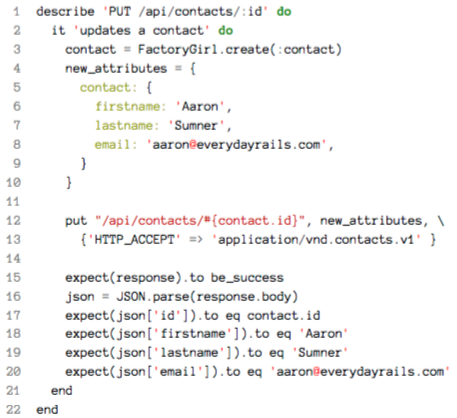
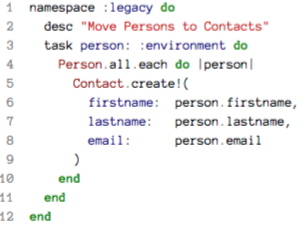
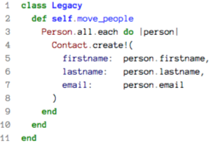

book-everydayrspec
Table of Contents
Cover
Everyday Rails Testing with RSpec 中文版
使用 RSpec 测试 Rails 程序
by Aaron Summer, 2014
Preface
- Rails 4.1 / RSpec 3.1
- 主要程序：Rails, RSpec, Capybara, FactoryGirl
- Twitter Bootstrap 框架
- Seletium 的用法
- TDD 流程
本书的 GitHub issues：https://github.com/everydayrails/rails-4-1-rspec-3-0/issues
Tip: Everyday Rails blog
Ackowledgement
- why the lucky stiff
- Ryan Bates: Railscasts
1. 导言
Rails 内建了一个测试框架 [ME: MiniTest or Test:Unit???]
在写作本书时, Ruby Toolbox 网站仅在单元 测试这一类别中就列出了 17 个项目.
早期的 Rails 书籍和教程过多的追求开发速度(例如在 15 分钟内开发一个博客系统),而没 有关注良好的开发习惯,比如测试。如果涉及到测试的话,往往也是在编完主要功能之后 用一章单独介绍。近期的书籍和教程已经意识到了这个不足,会在开发应用的过程中贯穿 讲解测试,甚至还有很多书是专门介绍测试的。但是如果没有完整的测试方案,很多开发 者,特别是和曾经的我一样的人,会觉得没有系统地掌握测试策略。
写作这本书,目的就是向你介绍我使用的 系统的测试策略 。你可以沿用这个策略,让测试 变得系统化。
为什么用 RSpec?
如果我开发的是 独立的 Ruby 代码库 ,我一般会使用 MiniTest。但是, 测试 Rails 应用 时我一直坚持使用 RSpec。
我看中的是 RSpec 不复杂而且阅读起来 很顺畅的语法。。我发现即使是非技术人员,稍 做培训,也能阅读使用 RSpec 编写的测试,而且能理解在测试什么。
哪些人应该阅读本书
如果 Rails 是你第一个使用的 Web 应用框架,而且之前的编程经验没有接触过测试,本书 或许能引领你进入测试领域。
如果你对 Rails 不熟悉,阅读本书之前最好过一遍
- Michael Hartl 写的的《Ruby on Rails Tutorial》6(针对 Rails 4 的版本可以在线阅读7),
- Daniel Kehoe 写的《Learn Ruby on Rails》,或者
- Sam Ruby 写的《Agile Web Development with Rails 4》
如果你已经用 Rails 一段时间了,而且在“生产环境”中已经部署了一到两个应用,但对测 试还很陌生,那么这门书就是为你而写的! -> 以测试驱动开发理念去思考问题
具体来说,你应该具备以下知识:
- Rails中用到的MVC架构
- Bundler
- 如何运行 rake 任务
- 命令行基本用法
- 在 Git 仓库中切换分支的方法
对经验丰富的人来说,如果你能熟练的使用 Test::Unit、MiniTest 或 RSpec,而且已经总结 了一套适合自己的测试流程,测试覆盖程度比较高,那么只需做 微的调整就能测试应用 了。说句实话,这时你已经掌握了自动化测试,不用再阅读本书了。
这本书不会涉及测试 理论,也不会过多的关注性能问题。从长远来看,其他的书或许对你更有帮助。
本书最后的 Rails 测试相关的更多资源 , 列出了一些测试相关的书籍、网站和教程链接。
我的测试哲学
测试真的有正确的方法,如果让我说,正确的测试可以分为好几个层次。
测试时我关注的是以下这几个 基本点:
- 测试要 可靠;
- 测试要 易于编写;
- 测试要 易于理解 。
However, 如果考虑这三个因素,在为应用编写较为全面的测试组件时会遇到很多困难,要成为真正 的测试驱动开发践行者就更是难上加难。
-> 我们可以采取一些 折中方案:
- 不关注效率 (不过,稍后我们还是会讨论这个话题)
- 不 过度 考虑代码重复的问题 (我们也会讨论如何消除代码重复)
-> 最终，我们得到的是一些可靠且容易理解的测试,虽然还有很多地方可以优化,但这却是 一个好的开始。
-> 充分利用自动化测试的长处,使用测试驱动开发的理念,捕获潜在问题和边缘情况。
本书组成
展示如何使用 RSpec 3.1 为一个完全没有测试的 Rails 4.1 应用编写合适的 测试组件。本书由以下几章组成:
- 正在阅读的是《第 1 章导言》;
- 《第 2 章安装 RSpec》会介绍如何为一个新的或者现存的 Rails 应用安装 RSpec,还会
- 介绍一些其他有用的测试工具;
- 《第 3 章模型测试》会介绍如何使用为模型编写可靠的单元测试(unit test);
- 《第 4 章预构件》会介绍如何使用预构件(factory)简明的生成测试数据;
- 《第 5 章控制器测试基础》会介绍一些控制器测试的基本知识;
- 《第 6 章控制器测试进阶》会介绍如何使用控制器测试确保用户身份验证和权限限制运作良好,保证应用中数据的安全;
- 《第 7 章清理控制器测试》会首次涉及到测试重构,消除代码重复而不破坏测试的可 靠性;
- 《第 8 章功能测试》会介绍集成测试的用法,也就是如何测试应用不同组件之间的交 互;
- 《第 9 章提升测试速度》会介绍一些重构的技巧和提高测试运行速度的方法,;
- 《第 10 章测试其他功能》会介绍如何测试前几章没有涉及的部分,例如 Email、文件上传、时间相关的功能,以及 API;
- 《第 11 章迈向测试驱动开发》中分步演示测试驱动开发的流程;
- 《第 12 章最后的建议》中总结全书。
强烈建议你完成这些练 习,在自己的应用中练练手,因为本书不会开发一个完整的应用,只用到了一些代码片段 和技术。把书中介绍的技术用在你的项目中,才能让应用变得更好。
下载示例代码
https://github.com/everydayrails/rails-4-1-rspec-3-0
Tip:
- Git Immersion 很不错,通过自己动手在命令行中操作,学习 Git 基本知识。
- Try Git 也不错。
- 要想复习,可以查看 Git Reference。
代码约定
本书中的应用使用了下面这些程序:
- Rails4.1: 本书重点关注的是Rails的最新版本,但据我所知,书中介绍的技术可以在 Rails 3.0 之后的任一版本中使用。如果你没有使用和我一样的版本,可能要适当修改 书中用到的示例代码。
- Ruby2.1: 如果你使用的是Ruby1.9或2.0,应该不会发现明显的不同。如果你还在使 用 Ruby 1.8,我建议你不要试图一成不变的读完本书。
- RSpec3.1: 2014年春天,RSpec3.0发布了。几个月之后,又发布了RSpec3.1,这一版 基本上和 3.0 没有太大的区别。新版使用的句法和 RSpec 2.14 很相似,不过也有些区 别。
Note: 书中的代码不是教你怎么开发应用的,而是帮助你 学习理解测试模式和好的习惯,以便于在自己编写的应用中使用。你可以简单的复制粘贴, 但这样就什么也学不到了。你可能很熟悉 Zed Shaw 在 “笨方法学习系列” 中采用的学习 方式.
关于示例应用
本书中用到的示例应用是一个小型的联系人管理应用,功能很简单,界面也不漂亮,可能 只算是完整网站的一部分。
- 这个应用会列出名字、Email 地址和电话号码,
- 任何访客都可 以查看,还可以按照名字的首字母查找联系人。
- 用户登录后才可以添加新联系人,或者编 辑已存的联系人,
- 只有管理员才能添加新用户。
Tip: 所有的代码都是用 Rails 的生成器生成的(参见 code/01_untested 分支中的示例代码),所以应用中有一个名为 test 的文件夹,里面的测试文件和固 件我都没动过。如果执行 rake test 命令,可能其中某些测试是可以通过的。既然这本书 是介绍 RSpec 的,那么最好不要生成默认的测试文件夹,告诉 Rails 我们要使用 RSpec,编 写更好的测试组件
现下首先要做的事是设置应用,使用 RSpec,当我们运行 Rails 生成器时生成相关的测试文 件以及其他相关文件。现在就开始吧。
2. 安装 RSpec
为应用添加新功能之前,我们要使用 RSpec 和一些其他的应用实现 自动化测试。
在编写测试代码之前,我们先要做一些设置。
本章我们会完成以下任务:
- 先使用 Bundler 安装 RSpec 和其他测试要用到的程序;
- 检测是否要安装“测试数据库”;
- 接下来我们要设置一下 RSpec,这样才能测试我们想测试的功能;
- 最后,我们要设置一下 Rails,当添加新功能时自动生成测试相关的文件;
Tip: 本章所用的完整代码在 02_setup 分支中。在命令行中输入 git checkout -b 02_setup origin/02_setup 即可。
如果你想跟着我一起做,可以检出前一章的分支: git checkout -b 01_untested origin/01_untested 。详情参见第 1 章。
Gemfile
Rails 应用默认不提供 RSpec. 使用 Bundler 来安装这些依赖库。请打开应 用的 Gemfile 文件,加入下面的代码:
group :development, :test do gem 'rspec-rails' gem 'factory_girl_rails' end group :test do gem 'faker' gem 'capybara' gem 'database_cleaner' gem 'launchy' gem 'selenium-webdriver' end
Then bundle install.
为什么要安装在两个组中?
在“开发环境”和“测试环境”中都会用到 rspec-rails 和 factory_girl_rails,在“开发环境” 中,生成器会调用这两个 gem,稍后会介绍如何使用。其他的 gem 只会在运行测试时用到, 所以就没必要加载到“开发环境”中。这样设置还可以确保部署到服务器上后,用来生成 代码或运行测试的 gem 不会安装到“生产环境”中。
我们安装了哪些 gems：
rspec-rails: 封装RSpec的程序,还包含了一些专为Rails提供的功能;factory_girl_rails: 把Rails生成测试数据默认使用的固件换成更好用的预构件faker: 为预构件生成名字、Email地址以及其他的示例数据;capybara: 便于模拟用户和应用的交互操作;database_cleaner: 清理“测试数据库”,确保RSpec中的测试用例运行于一块净土之 上;launchy: 这个gem的功能只有一个,但做的很好,如果需要,它会打开系统的默认 浏览器,显示应用当前渲染的页面。调试测试时特别有用;selenium-webdriver: 结合Capybara测试基于JavaScript的交互操作。
测试数据库
如果是为 现有的 Rails 应用 编写测试,在你的电脑中很可能已经搭建了“测试数据库”。
如果没有的话,请参照下面的方法搭建。
打开 config/database.yml 文件,看看你的应用使用的是哪种数据库。如果你没有修改过这 个文件的话,应该可以看到下面的设置:
- sqlite3:
test: adapter: sqlite3 database: db/test.sqlite3 pool: 5 timeout: 5000
- MySQL:
test: adapter: mysql2 encoding: utf8 reconnect: false database: contacts_test pool: 5 username: root password: socket: /tmp/mysql.sock
- PostgreSQL:
test: adapter: postgresql encoding: utf8 database: contacts_test pool: 5 username: root # or your system username password:
如果这三种设置都没有看到,请把相应的代码加进去,并把 contacts_test 换成你自己的应 用所用的“测试数据库”的名字。
最后,为了确保能和数据库通信,需要执行下面的 rake 任务:
bundle exec rake db:create:all >>>>> Created database 'db/development.sqlite3' Created database 'db/test.sqlite3' Created database 'db/production.sqlite3'
如果之前没有“测试数据库”,执行这个任务后就搭建好了;如果已经搭建了,这个任务 会友好的提示数据库已经存在,所以你不必担心会把之前的数据库删掉。
bundle exec rake db:create:all >>>>> Database 'db/development.sqlite3' already exists Database 'db/test.sqlite3' already exists Database 'db/production.sqlite3' already exists
下面,我们要设 置 RSpec 了。
设置 RSpec
现在,我们可以在应用中添加一个 spec 文件夹了,同时还要对 RSpec 做些基本的设置。
我们要使用下面的命令安装 RSpec:
bundle exec rails generate rspec:install >>>> create .rspec create spec create spec/spec_helper.rb create spec/rails_helper.rb
Explanation:
- 生成了 RSpec 配置文件(
.rspec), - 用来存放测试文件的文件夹(
spec), - 以及两个保存帮助 函数的文件(
spec/spec_belper.rb和spec/rails_helper.rb), 我们可以在这个帮助函数文 件中定制如何和应用的代码交互。(现在没必要通读这两个文件,不过,既然 RSpec 是 Rails 工具集中的一部分,我强烈建议你找个时间读一下,试验一下不同的设置)
下面这一步设置是 可选 的: 我喜欢把 RSpec 默认的输出格式换成更 便于阅读的文档格式 (使用文档格式可以清晰的看出哪些测试通过了,哪些失败了。而且还会生成一个调理清楚 的测试用例大纲,可作为文档使用)。我们要在 .rspec 文件中加入下面这行设置:
--format documentation
Tip: 如果你使用的是 RSpec 3.0, 而不是 3.1, 可能还想从这个文件中删除 --warnings (如果加入 这个选项,RSpec 会输出应用及其所用 gem 抛出的所有提醒。在真实的应用中启用这个选 项很有用,因为我们要关注测试给出的功能弃用提醒,但现在我们的目的是学习测试,关 闭提醒可以减少测试结果的输出量)。如果以后需要,随时可以启用。
生成器
这一步也是 可选 的: 告诉 Rails,使用内置的生成器生成模型、控制器和脚手架时,生成测试文件。
得益于强大的 Railties, 安装 rspec-rails 和 factory_girl_rails 这两个 gem 之后,一切就 都搞定了。Rails 的生成器将不会在 test 文件夹中生成 Test::Unit 测试文件,而是在 spec 文 件夹中生成 RSpec 测试文件(生成的预构件存在 spec/factories 文件夹中)。
可选: 不过,如果需要,还可以对生成器做些设置。如果使用 scaffold 生成器生成应用代码的话,可能就想自定义一下设置,因为默认的生成器会生成很多测试文件,而本书不会做介绍,特别是“视图测试”。
-> 打开 config/application.rb 文件,在 Application 类中加入下面的代码:
config.generators do |g| g.test_framework :rspec, fixtures: true, view_specs: false, helper_specs: false, routing_specs: false, controller_specs: true, request_specs: false g.fixture_replacement :factory_girl, dir: 'spec/factories' end
Explanation:
fixtures: true的意思是为各模型生成测试固件(使用 Factory Girl 创建的预构件,而 不是默认的固件)view_specs: false的意思是不生成“视图测试”。本书不会介绍“视图测试”,测试 界面元素我使用的是 功能测试helper_specs: false的意思是生成控制器时不生成对应的帮助方法测试文件。 如果你觉得有必要,可以把这个选项设为 true,对帮助方法进行测试routing_specs: false的意思是不生成针对config/routes.rb的测试文件。如果应用 很简单,比如本书用到的程序,可以放心的跳过路由测试。不过, 如果是大型应用, 路由很复杂,最好还是测试一下路由g.fixture_replacement :factory_girl告知 Rails 使用预构件代替固件,把预构件存放 在spec/factories文件夹中
Note: 请记住,RSpec 不生成这些文件 [ME: 按照上面的设置???] ,但是你可以 手动创建,也可以 删除不用的文件 。假如需要一个帮助方法测试文件,可以在 spec/helpers 文件夹中新建,文件名要按照测试文件的 命名约定 。所以,如果要测试 app/helpers/contacts_helper.rb 文件,建立的测试文件就是 spec/helpers/contacts_helper_spec.rb;如果要测试 lib/my_library.rb ,建立的测试文件 就是 spec/lib/my_library_spec.rb,依此类推。
把数据库模式应用到测试中
Rails 4.1 之前的版本需要手动执行 rake db:test:prepare 或 rake db:test:clone 命令,把开 发数据库的结构复制到测试数据库中。现在,只要执行 迁移 ,Rails 就会自动为你执行这一步。
至此,我们的应用就可以使用 RSpec 进行测试了!
现在我们可以第一次运行测试了:
bundle exec rspec
>>>>
No examples found.
Finished in 0.00084 seconds (files took 0.16892 seconds to load)
0 examples, 0 failures
看起来不错。从下一章开始,就要使用 RSpec 编写测试检测应用的功能了,我们先从 模型层 入手。
问答
- 我可以删除 test 文件夹吗?
如果你使用的是新生成的应用,当然可以。如果你已经 开发一段时间了,请先执行bundle rake test任务,看一下这个文件夹中的测试有没有必要 转到 RSpec 的spec文件夹中。 - 为什么不测试视图呢?
编写可靠的视图测试是很困难的事,维护就更不用说了。我在设置生成器时说过, UI 相关的测试会交由集成测试实现 。 这是 Rails 开发者普遍使用的方式
练习
如果你使用的是现有的应用:
- 把 RSpec 和其他所需的 gem 加入 Gemfile,使用 Bundler 安装。本书用到的代码和介 绍的技术可以用在 Rails 3.0 及以上版本中。
- 确保你的应用已经做了正确的设置,可以和“测试数据库”通信。如果需要,请搭建 “测试数据库”。
- 设置一下 Rails 的生成器,以后再为应用添加功能时使用 RSpec 和 Factory Girl 生成测 试相关的文件。当然,你也可以使用这些 gem 提供的默认设置。
- 做一个清单,列出这个应用现在需要测试的功能有哪些。包括核心功能,以前遇到 过要修正的问题,破坏现有功能的新功能,以及边缘情况。后面的章节会一一介绍 这些情况。
如果你使用的是新建的应用:
- 按照前面介绍的方法,使用 Bundler 安装 RSpec 和相关的 gem。
database.yml文件中应该已经设置好了“测试数据库”,如果你不想使用 SQLite,或需要搭建一下,请执行bundle exec rake db:create:all。- 选做题。设置一下 Rails 的生成器,当添加新的模型和控制器时使用 RSpec 和 Factory Girls 生成所需的测试文件和预构件文件。
附加题
如果你要经常新建 Rails 应 用,可以创建一个 Rails 应用模板,自动把 RSpec 和相关的设置加入 Gemfile 和设置文件中, 而且还可以自动搭建“测试数据库”。Daniel Kehoe 开发的 Rails Composer 是不错的选择
3. 模型测试
我们已经安装了编写稳固可靠测试所需的工具,下面就要使用这些工具来编写测试了。我 们先从应用的核心部分模型入手。
本章我们会完成以下任务:
- 先为一个现有的模型(Contact模型)编写测试;
- 然后为模型的数据验证、类方法和实例方法编写测试,在这个过程中还会介绍如何合理的组织测试代码;
我们会 自己动手 创建针对现有模型的测试文件。如果要添加新模型( 第 11 章 会这么做), 因为在第 2 章中做了设置,RSpec 生成器会 自动生成 所需的文件。
分析模型测试 best_practice
在模型层中学习测试是最简单的方法,因为在模型中你可以检验应用的核心功能是 否运作良好。模型层中经过良好测试的代码是应用开发的关键,打好这层基础,上层的代 码才能可靠。
模型测试应该包含:
- 针对
create方法的测试,如果参数合法,测试应该通过; - 无法通过数据验证的数据,测试应该失败;
- 检测类方法和实例方法是否可以正常使用;
现在最好来看一下 RSpec 模型测试的基本结构。可以把测试看成是一个 大纲 ,这 样会给你带来不少帮助。例如,下面是对 Contact 模型的要求:
describe Contact do it "is valid with a firstname, lastname and email" it "is invalid without a firstname" it "is invalid without a lastname" it "is invalid without an email address" it "is invalid with a duplicate email address" it "returns a contact's full name as a string" end
这是一个针对简单模型所编写的简单测试,但却体现了三个 最佳实践:
- 描述了一系列期望出现的表现,也就是Contact模型能做哪些事情;
- 每个测试用例(以 it 开头的代码行)只检测一个期望 。注意,我分别单独测试了 firstname、lastname 和 email 能否通过验证。这么做如果测试失败了,我们就能知道 到底是哪个属性没有通过验证,而不用排查 RSpec 的输出,至少不用很深入。
- 每个测试用例的目的都很明确 。=it= 后面的描述文字在 RSpec 中其实是可以省略的, 不过省略了测试代码读起来就不太顺口了。
- 每个测试用例的描述文字都以动词开头, 而没用“应该(
should)”。请大声的读出这 些期望的表现:Contact is invalid without a firstname, Contact is invalid without a lastname, Contact returns a contact’s full name as a string。我们关注的是可读性。
编写模型测试
首先,打开 spec 文件夹,如果需要的话,请新建 models 子文件夹。在 models 文件夹中新 建一个名为 contact_spec.rb 的文件,写入以下代码:
require 'rails_helper' describe Contact do it "is valid with a firstname, lastname and email" it "is invalid without a firstname" it "is invalid without a lastname" it "is invalid without an email address" it "is invalid with a duplicate email address" it "returns a contact's full name as a string" end
注意: 顶部 require 'rails_helper'= 这行代码, 以后编写测试都要包含这行 代码。这是 RSpec 3 做出的变化,以前的版本加载的是 =spec_helper,不过在新版中把 Rails 专用的内容提取出来了,减少了主帮助文件中的内容。 第 9 章 会做进一步说明。
Important: 位置 – 测试文件的名字和存放的位置都很重要!RSpec 的文件结构和应用的 app 文件夹可 以一一对应。对模型测试来说,contact_spec.rb 测试文件对应的是 contact.rb 模 型文件。使用自动化测试时,这一点尤为重要。
稍后我们会编写具体的测试代码,如果现在在命令行中运行测试的话(执行 bundle exec rspec 命令),应该会得到类似下面的输出:
Contact
is valid with a firstname, lastname and email
(PENDING: Not yet implemented)
is invalid without a firstname
(PENDING: Not yet implemented)
is invalid without a lastname
(PENDING: Not yet implemented)
is invalid without an email address
(PENDING: Not yet implemented)
is invalid with a duplicate email address
(PENDING: Not yet implemented)
returns a contact's full name as a string
(PENDING: Not yet implemented)
Pending:
Contact is valid with a firstname, lastname
and email
# Not yet implemented
# ./spec/models/contact_spec.rb:4
Contact is invalid without a firstname
# Not yet implemented
# ./spec/models/contact_spec.rb:5
Contact is invalid without a lastname
# Not yet implemented
# ./spec/models/contact_spec.rb:6
Contact is invalid without an email address
# Not yet implemented
# ./spec/models/contact_spec.rb:7
Contact is invalid with a duplicate email address
# Not yet implemented
# ./spec/models/contact_spec.rb:8
Contact returns a contact's full name as a string
# Not yet implemented
# ./spec/models/contact_spec.rb:9
Finished in 0.00105 seconds (files took 2.42 seconds to load)
6 examples, 0 failures, 6 pending
有 6 个待实现的测试,下面就来编写测试代码,让其通过,先从第一个测试用例开 始。
不过,在此之前,我要说明一下 RSpec DSL 句法最近所做的一项重要变化。
Tip: 如果我们使用 Rails 的 model 或 scaffold 生成器添加新模型的话,会自动生成模型 测试文件。(如果没有生成,请参照第 2 章,适当的设置一下生成器,或者确认是 否正确安装了 rspec-rails 。)不过,你还得自己填充细节。
RSpec 的新句法
2012 年 6 月, RSpec 开发团队宣布,在 V2.11 中使用了新句法代替传统的 should 式句法。新句法可能让人不太适应。
新句法削弱了 should 引起的技术问题 (RSpecs's New Expectation Syntax).
现在我们不说某物应该( should )或不应该 (should_not)符合期望的输出,而是说期望某物是(to)或者不是(not_to)其他的东西。
举个例子,请看下面这个测试用例。在 Ruby 中, true 永远都是真值,用 RSpec 的来表达,
使用旧句法可以这么写:
it "adds 2 and 1 to make 3" do (2 + 1).should eq 3 end
新句法会把要测试的值传递给 expect() 方法,然后和匹配器比较:
it "adds 2 and 1 to make 3" do expect(2 + 1).to eq 3 end
在本书中使用新的 expect() 形式. 在以后发布的 RSpec 版本中,如果要使用 should 式句法,很可能需要做额外的设置。
编写 Contact 模型测试中的第 一个测试用例:
require 'rails_helper' describe Contact do it "is valid with a firstname, lastname and email" do contact = Contact.new( firstname: 'Aaron', lastname: 'Sumner', email: 'tester@example.com') expect(contact).to be_valid end # remaining examples to come end
这个简单的测试用例使用了 RSpec 中的 be_valid 匹配器,检测模型是否能够检测数据的合 法性。我们创建了一个对象( Contact 的实例 contact,但没有存入数据库),传递给 expect 方法,和匹配器比较。
现在如果在命令行中运行测试(执行 bundle exec rspec 命令),会发现有一个测试用例通 过了!
测试数据验证
针对数据验证的测试是自动化测试很好的演示。其代码一般也就一到两行,如果把重担交 由预构件的话( 下一章 会介绍),代码量还可以更少。让我们来看一下针对 firstname 数据 验证的测试:
it "is invalid without a firstname" do contact = Contact.new(firstname: nil) contact.valid? expect(contact.errors[:firstname]).to include("can't be blank") end
[ME: 仅运行 model 测试 bundle exec rspec spec/models ]
这一次我们期望新建的联系人(把 :firstname 设为了 nil)是不合法的,这样会得到一个 关于 :firstname 属性的错误。我们使用 RSpec 提供的 include 匹配器检查是否包含指定的 值。如果再次运行 RSpec,就应该看到有两个测试通过了。
为了证明测试值准确的,我们把 to 改为 not_to. RSpec 肯定会报告错误.
这种简单的方法可以 验证测试是否准确, 特别是当测试由简单的数据验证变成更复杂的逻 辑时 。在继续编写测试之前,记得把 not_to 改成 to。
接下来我们用类似的方式编写针对 :lastname 数据验证的测试。
你可能觉得这些测试没什么意义,我怎么会轻易忘记在模型中加入数据验证呢。其实,这 种可能性比你想的要大。而且, 编写测试时设想模型中应该加入哪些数据验证 (理想情况 下,最 你会养成 测试驱动开发 思维), 你就更有可能记得把这些验证加入模型中 。
检测 Email 地址唯一性的测试也很简单:
it 'is invalid with a duplicate email address' do Contact.create( firstname: 'Joe', lastname: 'Tester', email: 'tester@example.com' ) contact = Contact.new( firstname: 'Jane, lastname: 'Tester', email: 'tester@example.com' ) contact.valid? expect(contact.errors[:emmail]).to include('has already been taken') end
Note: 这段代码中有一处和之前不一样,我们 保存 了一个联系人(调用了 create 方法,而 没用 new 方法),作为要比较的对象,然后又新建了另一个联系人,作为测试的对象。当 然,保存的联系人一定要是合法的(指定了姓和名字),必须指定 Email 地址。后续的章节会介绍如何使用帮助方法简化这个过程。
下面我们来测试稍微复杂的数据验证。假如我们要确保用户的电话号码不能重复,同一用 户的家庭、办公室和手机号码都应该不一样。你会怎么编写测试呢?
在 Phone 模型测试中,我们可以这样编写测试:
require 'rails_helper' describe Phone do it "does not allow duplicate phone numbers per contact" do contact = Contact.create( firstname: 'Joe', lastname: 'Tester', email: 'joetester@example.com' ) contact.phones.create( phone_type: 'home', phone: '785-555-1234' ) mobile_phone = contact.phones.build( phone_type: 'mobile', phone: '785-555-1234' ) mobile_phone.valid? expect(mobile_phone.errors[:phone]).to include('has already been taken') end it "allows two contacts to share a phone number" do contact = Contact.create( firstname: 'Joe', lastname: 'Tester', email: 'joetester@example.com' ) contact.phones.create( phone_type: 'home', phone: '785-555-1234' ) other_contact = Contact.new firstname: 'Jane', lastname: 'Tester', email: 'joetester@example.com' ) other_phone = other_contact.phones.build( phone_type: 'home', phone: '785-555-1234' ) expect(other_phone).to be_valid end end
这里,因为 Contact 和 Phone 模型是通过 Active Record 关联 的,我们要提供一些额外的信 息。在第一个测试用例中,我们指定了联系人的两个电话号码。在第二个测试用例中,两 个联系人使用了同一个电话号码。注意,在两个测试用例中,我们都新建了联系人,将其 保存到数据库中,这样才能设置联系人的电话号码。
因为 Phone 模型中有下面这个数据验证:
validates :phone, uniqueness: { scope: :contact_id }
所以这个测试应该是可以通过的。
当然,作用域验证还算是简单的,数据验证还可以更复杂。很多测试可能会涉及到 使用正 则表达式或者自定义的方法 。你要 养成测试数据验证的习惯 , 不仅要测试能通过验证的情 况,还要测试不能通过验证的情况 。
测试实例方法
每次都要手动连接姓和名字生成联系人的姓名是有点麻烦的, 如果能直接调用 @contact.name 这样的方法就方便的多,所以我们在 Contact 类中定义了这个方法:
def name [firstname, lastname].join(' ') end
我们可以参照上面用到的技术,编写针对这个方法的测试:
it "returns a contact's full name as a string" do contact = Contact.new(firstname: 'John', lastname: 'Doe', email: 'johndoe@example.com') expect(contact.name).to eq 'John Doe' end
Tip: 测试相等时,RSpec 推荐使用 eq 而不是 ==。
测试类方法和作用域
下面我们来编写测试检测 Contact 模型是否能按照指定的首字母返回一组联系人,这些联 系人的名字都必须以这个字母开头。例如,如果点击 S,返回的联系人可以包含 Smith、 Sumner 等,但不应该有 Jones。这种测试有很多编写方式,下面我举例说明其中一种。
在模型中,这种功能是通过下面这个简单的方法实现的:
def self.by_letter(letter) where("lastname LIKE ?", "#{letter}%").order(:lastname) end
[ME: refer to Active Record Query Interface.]
要测试这个方法,我们可以在 Contact 模型测试中加入如下代码:
require 'rails_helper' describe Contact do # earlier validation examples omitted ... it "returns a sorted array of results that match" do smith = Contact.create( firstname: 'John', lastname: 'Smith', email: 'jsmith@example.com' ) jones = Contact.create( firstname: 'Tim', lastname: 'Jones', email: 'tjones@example.com' ) johnson = Contact.create( firstname: 'John', lastname: 'Johnson', email: 'jjohnson@example.com' ) expect(Contact.by_letter("J")).to eq [johnson, jones] end end
注意,我们不仅测试了返回值的内容,还测试了排序是否正确。联系人 jones 虽然比联系 人 johnson 先从数据库中取出来,但因为我们实现的排序依据是姓,所以在最 的结果中, johnson 会排在前面。
测试失败情况
我们测试了正常情况,用户选择的首字母有返回的结果,但如果凑巧所选择的首字母下 没有结果 呢?我们最好也测试一下这种情况。下面的测试应该可以实现这一要求:
require 'rails_helper' describe Contact do # validation examples ... it "omits results that do not match" do smith = Contact.create( firstname: 'John', lastname: 'Smith', email: 'jsmith@example.com' ) jones = Contact.create( firstname: 'Tim', lastname: 'Jones', email: 'tjones@example.com' ) johnson = Contact.create( firstname: 'John', lastname: 'Johnson', email: 'jjohnson@example.com' ) expect(Contact.by_letter("J")).not_to include smith end end
这段测试使用 RSpec 的 include 匹配器检测 Contact.by_letter("J") 的返回值中是否没有 包含联系人 smith。这个测试是可以通过的。我们不仅测试了正常情况,用户所选的首字 母下有联系人,而且也测试了没有联系人的情况。
匹配器
我们已经实际使用了三个匹配器。
- 第一个是
be_valid[ME: andbe_invalid], 由rspec-rails提供,用来测试 Rails 模型的 合法性 。 - 然后是
rspec-expectations提供的eq和include。 前一章设置 RSpec 安装 rspec-rails 时会自动安装 rspec-expectations。
RSpec 默认提供的全部匹配器可以到 rspec-expectations 项目的 README 文件中查看。 第 7 章 我们会介绍如何自己编写匹配器。
使用 describe,context,before 和 after 削减重复
可以使用 RSpec 的另一个功能, before 块,简化测试代码,这样做还可以减少输入代码的字数。 上述模型测试代码有很多重复的地方,在每个测试用例中都创建了三个相同的对象。 跟应用的代码一样, DRY 原则 同样适用于测试(不过也有特例,详见下面的说明)。
首先在 describe Contact 块中再加入一个 describe 块, 专门 用来测试通过首字母筛选联系人的功能。测试的大纲如下:
require 'rails_helper' describe Contact do # validation examples ... describe "filter last name by letter" do # filtering examples ... end end
然后再添加两个 context 块, 分别对应 首字母下有联系人和没有联系人的情况:
require 'rails_helper' describe Contact do # validation examples ... describe "filter last name by letter" do context "matching letters" do # matching examples ... end context "non-matching letters" do # non-matching examples ... end end end
Note: 严格来说, describe 和 context 是可以互换的,但我倾向于这么用:
describe用来表示需要实现的功能 [ME: feature or functionality???],context针对该功能不同的情况 [ME: scenario???]。
Tip: 有些开发者习惯使用方法名作为嵌套 describe 块的描述文本,例如把 filter last name by letter 换成 #by_letter。就我个人而言,并不喜欢这种方式,我坚信这个 文本应该表述代码的作用而不仅仅是列出方法名。其实,我也不十分反对使用方 法名。
我们编写的这个测试大纲可以帮助我们把类似的测试用例组织在一起,这样测试读起来就更通顺。
现在我们要用 before 块来清理一下重新组织的测试:
require 'rails_helper' describe Contact do # validation examples ... describe "filter last name by letter" do before :each do @smith = Contact.create( firstname: 'John', lastname: 'Smith', email: 'jsmith@example.com' ) @jones = Contact.create( firstname: 'Tim', lastname: 'Jones', email: 'tjones@example.com' ) @johnson = Contact.create( firstname: 'John', lastname: 'Johnson', email: 'jjohnson@example.com' ) end context "matching letters" do it "returns a sorted array of results that match" do expect(Contact.by_letter("J")).to eq [@johnson, @jones] end end context "non-matching letters" do it "omits results that do not match" do expect(Contact.by_letter("J")).to_not include @smith end end end end
RSpec 的 before 块是消除测试重复的利器。 before 块中的代码会在该 describe 块中的所有测试用例之前执行,但不会在该代码块外部执行。
Tip: before 块的默认方法是 each,很多 Ruby 程序员喜欢使用较为简短的 before do 创 建 before 块,我则倾向于使用 before :each do ,本书会一直使用这种长句法。
假如测试在用例执行后需要中断与外部服务的连接,那么我们就可以使用 after 块来善后 测试用例。因为 RSpec 会自行清理数据库,所以我很少使用 after。
执行这个测试后,我们会看到一个十分清晰的大纲(因为在第 2 章设置 RSpec 的输出使用 “文档”格式):
Contact
is valid with a firstname, lastname and email
is invalid without a firstname
is invalid without a lastname
is invalid without an email address
is invalid with a duplicate email address
returns a contact's full name as a string
filter last name by letter
with matching letters
returns a sorted array of results that match
with non-matching letters
omits results that do not match
Phone
does not allow duplicate phone numbers per contact
allows two contacts to share a phone number
Finished in 0.51654 seconds (files took 2.24 seconds to load)
10 examples, 0 failures
避免过分消除重复
本章我们用了很多篇幅介绍如何把测试变得条理清晰。就像我说过的,关键是要善用 before 块。但也不能滥用。
在准备测试数据时,我认为 DRY 原则要适当的让位于可读性 。 – 如果你打开一个大型测试 文件(或者加载了很多外部支持文件),来回拉滚动条,想弄明白到底在测试什么,这时就 要考虑下 把测试数据放入更细化的 describe 块中,或者干脆直接在测试用例中创建所需的 数据 。
有时命名良好的变量可以节省很多时间。在上面的测试中我们定义的联系人分别名为 @jones 和 @johnson,这样的名字比 @user1 和 @user2 要更易于理解,因为这些测试对象是 要确保首字母查询功能正常运行。我们在 第 6 章 测试特定身份的用户时,使用了更好的变 量名字,例如 @admin_user 和 @guest_user 。 为变量取一个意义明确的名字是很重要的!
小结
本章的主要内容是介绍我如何测试模型,不过也涉及了很多其他技术,在其他类型的测试 中也可以使用:
- 明确指定希望得到的结果:使用动词说明希望得到结果。每个测试用例只测试一种 情况。
- 测试希望看到的结果和不希望看到的结果:测试时要分别思考两种情况,然后分别 测试。
- 测试极端情况: 如果有一个数据验证要求密码的长度在 4∼10 个字符范围内,不要只 测试 8 个字符的密码就觉得可以了。一个合格的测试应该分别检测 4 个字符和 10 个 字符的情况,还要检测 3 个字符和 11 个字符的情况。(当然,借由这个机会你也可以 思考一下为什么我要把密码限制的这么短,再长一些会不会更好。 测试的过程中往 往会有很多灵感,可以优化应用的需求和代码。 )
- 测试要良好的组织,保证可读性:
- 使用
describe和context组 测试,形成一个清晰 的大纲; - 使用 before 和 after 块消除代码重复。
不过,当可读性更重要时,例如避免 总是来来回回的查看测试文件,就可以适当的有点重复。
- 使用
为应用编写完整的模型测试后,就可以更确信代码是可以正常使用的。下一章,我们会把 这里介绍的技术用到应用的控制器中,当然还会介绍一些其他技术。
问答
应该怎么决定何时用 describe 何时用 context 呢?
对 RSpec 来说,如果你喜欢,可以只 用 describe。和 RSpec 很多其他的功能一样,之所以提供 context 只是为了提升代码的可 读性。你可以参考本章的用法, 把 context 用在同一功能的不同条件中 ,或者可以根据应用的需求选择使用 (refer to describe vs. context in RSpec)。
练习
目前为止,我们都假设测试没有错误,都会从待实现状态变成通过状态,期间不会失败。 请按照下面的说明验证一下测试确实是正确的:
- 注释掉测试针对的应用代码 。例如,在验证联系人有名字的测试中,我们可以把
validates :firstname, presence: true注释掉,再运行测试,看一下 it "is invalid without a firstname" 测试用例是否是失败的。然后去掉注释,看一下测试是否可以 通过。 - 修改传给
create方法的参数。这一次,编辑 it "is invalid without a firstname" 测试用例,赋给:firstname一个非 nil 值,看一下测试是否是失败的,然后再赋值 nil,看一下是否会通过。
4. 使用预构件生成测试数据
目前,测试所需的临时数据都是使用纯粹的 Ruby 对象创建的,因为现在的测试还没有复 杂到要使用别的方法。
如果测试变得复杂了,肯定就要使用一个生成数据的简单方式,这 样才能专注测试本身,而不必在数据的生成上浪费时间。-> 有很多实用的 Ruby 库可 以让生成测试数据变得很简单。本章,我们只会介绍 Factory Girl,这是很多开发者选择使 用的工具。
本章会介绍以下内容:
- 我们会说明预构件和其他方式相比的优势和缺点;
- 然后我们会创建一个简单的预构件,在现有的测试中使用;
- 接下来我们会修改这个预构件,变得更易使用;
- 然后我们会使用 Faker 生成更真实的测试数据;
- 我们会介绍更高级的预构件用法,涉及到 Active Record 模型之间的关联;
- 最后,我们会介绍在应用中过多地使用预构件可能带来的 负面影响;
对比预构件和固件
其实 Rails 默认提供了快速生成示例数据的工具,叫做“固件”。固件是一个 YAML 格式的 文件,可以用来生成示例数据。
例如,下面是一个针对 Contact 模型的固件文件:
contacts.yml:
aaron: firstname: "Aaron" lastname: "Sumner" email: "aaron@everydayrails.com" john: firstname: "John" lastname: "Doe" email: "johndoe@nobody.org"
在测试中我们可以引用 contacts(:aaron),这样就会得到一个联系人,所有的属性都附上了值。
固件有一定的作用,但同样有些 缺点:
- 固件中的数据很容易被破坏(这意味着要花费与编写测试和应用代码相等的时间维 护测试数据);
- Rails 在把固件中的数据存入“测试数据库”时会跳过 Active Record 层。这意味着很多重要的操作,例如模型的数据验证,会被忽略。
预构件能够简单灵活地创建测试数据. 例如 Factory Girl, 这个工具不像固件那么容易破坏,方便使用,生成的测试数据 也很可靠。
也有很多反对的声音,包括 Rails 的创始人 David Heinemeier Hansson,都认为预构件是拖慢测试的主要原因,而且如果模型关联很复杂的 话,预构件就会变成一团麻。
However, 执行缓慢的测试要 比没有测试强,也确信使用预构件对刚开始学习测试的人更友好。如果你开发了更好的工 具或者已经能熟练的编写测试了,随时都可以弃用预构件。
在应用中加入预构件
打开 spec 文件夹,新建一个子文件夹,名为 factories,然后再在其中新建一个文件,名 为 contacts.rb,写入以下内容：
spec/factories/contacts.rb:
FactoryGirl.define do factory :contact do firstname "John" lastname "Doe" sequence(:email) { |n| "johndoe#{n}@example.com"} end end
Explanation:
- 上面的代码会生成一个预构件,可以在任何测试中使用。
- 当我们调用
FactoryGirl.create(:contact)创建测试数据时,所生成联系人的名字都是 John Doe。 - 那么 Email 地址呢?生成 Email 地址 时我们使用了 Factory Girl 提供的一个实用功能,叫做“序列”( sequence )。读过这段代码 后你可能已经猜到了,每次调用这个预构件后,序列中的
n就会自动增加 1,生成的 Email 是 johndoe1@example.com、johndoe2@example.com 等。/只要模型中有唯一性验证,就可以使 用序列/ 。(本章后面的内容会介绍 生成 Email 地址和名字等更好用的工具,叫做 /Faker/。) - 可以使用其他属性类型,包括整数、布尔值和日期等。
- 还可以 传入 Ruby 代码动态赋值 ,记住 一定要把代码放入块中 (如上例 中的 序列 所示)。例如,如果要存储联系人的生日,在预构件中可以使用 Ruby 提供的日期 相关方法生成日期,例如
33.years.ago或Date.parse('1980-05-13')。
Tip: 预构件文件的名字不像测试文件那么特别。其实,如果你愿意,可以把所有的 预构件都放在同一个文件中。不过,通过 Factory Girl 生成器生成的文件都会放 在 spec/factories 文件夹中,文件的名字会使用 对应模型名字的复数形式 (所以 Contact 模型的预构件文件是 spec/factories/contacts.rb)。我一般都会遵守这个 约定 。只要预构件的句法正确,并且放在 /spec/factories 文件夹中,就不会有太大的问题。
[ME: put all factories in one file]
FactoryGirl.define do factory :city do name "My City" state "MI" latitude 50 longitude -80 association :country end factory :waukegan_city, class: City do name "Waukegan" state "IL" latitude "42.36" longitude "-87.81" association :country end factory :amherst_oh, class: City do name "Amherst" state "OH" latitude 41.36170 longitude -82.25380 association :country end end
Refer to FactoryGirl: Build all factories of a class or in a file?
定义好了预构件后,我们来看上一章编写的 contact_spec.rb 文件,新加入一个测试用例:
require 'rails_helper' describe Contact do it "has a valid factory" do expect(FactoryGirl.build(:contact)).to be_valid end ## more specs end
这段代码会创建一个新联系人(但 不存入数据库),属性的值是预构件中指定的,然后检 测生成的联系人是否合法。
重新编写现有的测试用例,使用 Factory Girl 生成所需的数据。这一次我们会覆 盖一个或多个预构件中指定的属性值:
it "is invalid without a firstname" do contact = FactoryGirl.build(:contact, firstname: nil) contact.valid? expect(contact.errors[:firstname]).to include("can't be blank") end it "is invalid without a lastname" do contact = FactoryGirl.build(:contact, lastname: nil) contact.valid? expect(contact.errors[:lastname]).to include("can't be blank") end it "is invalid without an email address" do contact = FactoryGirl.build(:contact, email: nil) contact.valid? expect(contact.errors[:email]).to include("can't be blank") end it "returns a contact's full name as a string" do contact = FactoryGirl.build(:contact, firstname: "Jane", lastname: "Smith" ) expect(contact.name).to eq 'Jane Smith' end
Explanation:
- 这些测试用例都很容易理解,调用 Factory Girl 的
build方法 创建新联系人,而且不存入数据库 。第一个测试用例中生成的联系人没有名字,第二个测试用例中生成的联系人没有 姓。因为 Contact 中有检测姓和名字存在性的验证,所以我们期望看到这两个测试失败。 针对 email 属性的数据验证测试类似。 - 第四个测试用例稍微不同,但使用的还是相同的基本方法。这一次我们为生成的联系人指 定了名字和姓,然后我们期望看到 contact 调用 name 方法的返回值和预想的一样。
下面这个测试使用了一点小技巧:
it "is invalid with a duplicate email address" do FactoryGirl.create(:contact, email: 'aaron@example.com') # <---- contact = FactoryGirl.build(:contact, email: 'aaron@example.com') contact.valid? expect(contact.errors[:email]).to include('has already been taken') end
这个测试用例的目的是,确保联系人的 email 属性不能重复使用。为了测试这样的要求, 数据库中先要有一个联系人,所以在设定期望之前,调用了 FactoryGirl.create 在数据库中存入 了一个联系人,Email 地址和 contact 的一样。
简化代码
每次生成新的联系人都要输 入 FactoryGirl.build(:contact) 太麻烦了,幸好从 Factory Girl 3.0 版开始,只要做一个 设置 ,这个设置可以加在 spec_helper.rb 文件 RSpec.configure 块中的任何地方:
spec/rails_helper.rb:
RSpec.configure do |config| # Include Factory Girl syntax to simplify calls to factories config.include FactoryGirl::Syntax::Methods # other configurations omitted ... end
然后在测试中就可以使用 简化后的句法 build(:contact) 了。加入这行设置后,还可以使用 create(:contact) 。在接下来的几章中,我们还会用到简化后的 attributes_for(:contact) 和 build_stubbed(:contact) 。
当然,你也可以不用这种简化的句法。
在预构件中处理关联和继承
如果要为 Phone 模型编写预构件,就我们目前掌握的知识,应该可以写成下面这样。
FactoryGirl.define do factory :phone do association :contact # <---- phone '123-555-1234' phone_type 'home' end end
注意我们调用了 association 方法,它会告知 Factory Girl,如果没把电话所属的联系人传 递给 build 方法(或 create 方法),就新建一个联系人。
不过,联系人可以有三种电话号码:家庭、办公室和手机。现在,如果我们要在测试中设 定一个非家庭号码的话,要像下面这样写:
it "allows two contacts to share a phone number" do create(:phone, phone_type: 'home', phone: "785-555-1234") expect(build(:phone, phone_type: 'home', phone: "785-555-1234")).to be_valid end
重构一下这段测试代码。在 Factory Girl 中,我们可以创建 继承的预构件 ,重置指 定的属性。也就是说,如果我们想在测试中生成一个办公室电话号码,我们应该可以直接 调用 build(:office_phone) (如果愿意,可以用完整的形式: FactoryGirl.build(:office_- phone))。这样的预构件如下:
FactoryGirl.define do factory :phone do association :contact phone { '123-555-1234' } factory :home_phone do phone_type 'home' end factory :work_phone do phone_type 'work' end factory :mobile_phone do phone_type 'mobile' end end end
[ME: ror tutorial 中 model micropost test 里使用 association, 在 it 'is invalid if this post belongs to a non-existing user' test case 里，可以直接指定 user_id ]
然后测试就可以简化了,如下所示:
require 'rails_helper' describe Phone do it "does not allow duplicate phone numbers per contact" do contact = create(:contact) create(:home_phone, contact: contact, # <---- association phone: '785-555-1234' mobile_phone = build(:mobile_phone, contact: contact, # <---- association phone: '785-555-1234' ) mobile_phone.valid? expect(mobile_phone.errors[:phone]).to include('has already been taken') end it "allows two contacts to share a phone number" do create(:home_phone, phone: '785-555-1234' ) expect(build(:home_phone, phone: "785-555-1234")).to be_valid end end
在 后面的章节 中, 当测试身份验证和权限限制功能时,还会用到这个技术来创建不同类型的用户(管理员和非管理员)。
生成更真实的虚拟数据
前面我们使用序列确保联系人预构件能生成各不相同的 Email 地址。我们可以做些改进, 生成更真实的测试数据, 使用一个虚拟数据生成工具,名为 Faker。– Faker 原本是一个久经 考验的 Perl 代码库,使用 Ruby 做了重写,可以生成虚拟的名字、地址、句子等,特别适 合在测试中使用。
下面我们在预构件中引入虚拟数据:
FactoryGirl.define do factory :contact do firstname { Faker::Name.first_name } lastname { Faker::Name.last_name } email { Faker::Internet.email } end end
Important: 运行测试后可以查看 log/test.log 文件,看一下存入数据库的 Email 地址是什么。
有两点需要注意一下:
- 第一,在预构件文件的第一行我们加载了 faker 库;
- 第二,我们把
Faker::Internet.email等方法放入了块中,这样 Factory Girl 就会把这个值视作 惰性属性 (lazy attribute),而 不是按照之前的方式把它当作静态字符串。
下面让我们按照同样的方式修改电话号码预构件。现在我们不会指定默认号码,而是随机 生成一个看起来更真实的唯一号码:
FactoryGirl.define do factory :phone do association :contact phone { Faker::PhoneNumber.phone_number } # child factories omitted ... end end
修改 后我们的测试就可以使用一些看起来更真实的数据了(而且 Faker 生成的某些数据还十分 有趣)。
除了上面介绍到的,Faker 还可以生成其他类型的数据,例如地址,虚假的公司名,口号, lorem 占位文字,具体 节请查看 Faker 的文档。
Tip: 还可以看一下 Forgery, 可用来替代 Faker。Forgery 的作用和 Faker 类似,但用法 不同。还有一个代码库叫做 ffaker。 这个代码库是对 faker 的重写, 速度提升了近 20 倍 。这些生成虚拟数据的代码库不仅可以用于测试,Everyday Rails 博客中有一篇文章介绍了如何使用 Faker 为截屏提供虚拟数据。
高级关联
目前为止,我们编写的数据验证测试所检测的大都是很简单的数据。除了要测试的模型之 外,没有涉及到其他内容,也就是说,
- 没有检测创建联系人时,是否同时创建了三种类 型的电话号码 。那么我们应该怎么测试呢?
- 而且我们要创建怎样一个预构件,让测试所用 的联系人看起来仍然真实呢?
使用 Factory Girl 的 回调函数”(callback) 可以解决这两个问题。回调函数特别适合用来 测试嵌套的属性.
例如在我们这个应用的界面中,新建或编辑联系人时,就可以输入电话 号码。我们对之前使用的联系人预构件做了修改,加入了 after 回调函数,确保预构件生 成联系人时,三种电话号码都指定了值,如下所示:
FactoryGirl.define do factory :contact do firstname { Faker::Name.first_name } lastname { Faker::Name.last_name } email { Faker::Internet.email } after(:build) do |contact| [:home_phone, :work_phone, :mobile_phone].each do |phone| contact.phones << FactoryGirl.build(:phone, phone_type: phone, contact: contact) end end end end
注意, after(:build) 后面跟着一个块,在块中遍历了三种电话号码组成的数组,生成了联 系人的电话号码。可以使用下面的测试用例检测这段代码是否可行:
it "has three phone numbers" do expect(create(:contact).phones.count).to eq 3 end
这个测试用例可以通过, 其他的测试也是可以通过的,这就证明了修改预构件没有影响现 有的功能 。
我们可以更进一步,在 Contact 模型中加入一个数据验证,确保联系人确实有 三个电话号码:
app/models/contact.rb:
validates :phones, length: { is: 3 }
你可以做个 实验 ,把上面这个数据验证中的数值改为其他数,再运行测试,你会看到所 有期望得到合法联系人的测试都失败了。你还可以做另一个实验,把联系人预构件中的 after(:build) 代码块注释掉,然后运行测试,同样的,会看到到处都是红色。
Tip: Factory Girl 回调函数的作用可不局限 于此。你可以阅读一下 Thoughtbot 的文章《Get Your Callbacks On with Factory Girl 3.3》,学习如何善用这一功能。
这些用法你迟早会在复杂的应用中遇到。其实,这个 例子是从我开发的一个日程安排应用中提取出来的,如果要在日程安排应用中组 一场会 议,必须至少有两个与会者。
after(:build) 只是我们可以使用的回调函数之一,其他的回调函数还有 before(:build) 、 before(:create) 和 after(:create), 用法和 after(:build) 类似。
避免滥用预构件
预构件真的很好用,但有时也会带来一些麻烦。本章开头我就说过, 结构不好的预构件会 导致测试组件变慢,尤其是当引入了复杂的关联后 。
通过预构件生成关联数据确实很容易,但经常被滥用,而且 预构件往往是测试变慢的罪魁 祸首 。 如果测试变得很慢,最好去掉预构件里的关联,手动加入所需的数据,或者使用第 3 章用到的纯 Ruby 对象生成数据,当然也可以二者结合使用。
如果你看过其他介绍常规测试方法或针对 RSpec 的文章,极有可能接触过 驭件(mock) 和 桩件(stub) 。根据我的经验,在测试中使用基本的对象和预构件更容易展开工作,用起来也更舒服些。而且,如果过量使用驭件和桩件,还会引起其他问题。
现在我们的应用还不算大型,没必要使用更高深的技术提升测试的速度。不过,驭件和桩 件确实有他们的作用,我们会在 第 9 章 和 第 10 章 中详 介绍。
小结
现在你所了解的技术应该 能解决大部分测试需求,不过我还是建议你阅读一下 Factory Girl 的文档,了解更多的用 法。Factory Girl 的用法多到可以写成一本书了。
虽然 Factory Girl 有不足之处,但是本书的后续章节还是会继续使用,当我们更熟练的掌握 测试技术后,会发现和 Factory Girl 提供的便利相比,完全可以忽略速度这个劣势。在下一 个测试目标中,Factory Girl 扮演了举足轻重的角色,它允许控制器所需的测试数据在模型 和视图中使用。 下一章 我们会做详 介绍。
练习
- 如果你的应用中还没用到预构件,那就创建一些吧;
- 设置 RSpec,使用 Factory Girl 简短的句法。看一下这种简短的句法会对测试可读性产生什么影响。
- 看一下应用的预构件,想一下如何使用预构件继承重构。
- 你的模型中是否有可以使用 Faker 生成的数据?如果需要,请查看 Faker 的文档,把 生成虚拟数据的方法加到预构件中。看一下测试是否仍然可以通过。
- 你的应用中有没有模型用到了嵌套属性?可以使用after(:build)回调函数生成更真实的测试数据吗?
5. 控制器测试基础
控制器很可怜,Rails 程序员力求编写简洁的控制器(这是好事),而在测试中经常不会过 多的检测控制器的功能(这就不好了,稍后会详解为什么)。
随着测试覆盖面的扩大,接 下来我们就要着手测试控制器。
测试控制器的 难点 之一是, 控制器经常会受到其他功能影响 ,比如, 模型之间的关联, 应用路由的设置 等。
本章,我们会先来介绍一些基础知识:
- 首先,我们会说明到底 为什么 要测试控制器;
- 然后我们会编写一些简单的控制器测试(其实 控制器测试就是单元测试);
- 接着我们会重新组测试代码,得到一个 大纲形式的输出;
- 然后介绍如何 使用预构件生成测试所需的数据;
- 然后再介绍如何 测试大多数控制器中都包含的 CRUD 相关的 7 个方法 ,还会测试一个非 CRUD 方法;
- 接着,看一下如何 测试嵌套路由;
- 最后,结合以上技术, 测试一个不输出 HTML 的控制器方法, 比如说导出文件功能。
对本章来说,我们要稍微修改一下应用的 contacts_controller.rb 文件。为了专注讲解控 制器测试基础,本站暂时要跳过身份验证功能。最简单的办法就是把相应代码注释掉:
app/controllers/contacts_controller.rb:
class ContactsController < ApplicationController # before_action :authenticate, except: [:index, :show] # <---- before_action :set_contact, only: [:show, :edit, :update, :destroy] #etc.
为什么要测试控制器?
有以下几点原因:
- 控制器也是类, 其中也有方法, 这个观点出自 Piotr Solnica 一篇很精彩的文章。在 Rails 应用中,控制器是很重要的类(其中的方法也很重要), 所以 最好把控制器和模型放在同等的地位上 。
- 相比集成测试, 控制器测试更易编写 。对我来说这一点很重要, 特别是当我遇到一 个控制器引起的错误,或者我要编写额外的测试检测重构是否成功时 。 编写可靠的 控制器测试相比较来说是个很直观的过程 ,因为我可以为要测试的方法指定输入值, 而不必动用庞大的请求测试。这也也就意味着
- 控制器测试一般都比集成测试运行的更快,这个特点在修正错误和检查用户可能输 入的错误路径时特别有用(当然也能检查正常的路径)。
为什么不测试控制器?
那么为什么在很多开源 Rails 项目中都没有编写控制器测试呢?我想原因可能有:
- 控制器应该尽量精简,精简到编写测试都是多余。
- 控制器测试虽然比功能测试快,但还是比模型测试和普通的 Ruby 对象慢。//第 9 章// 介绍过提升测试速度的方法后,这个原因就有点靠不住了,但还是个很好地借口。
- 一个功能测试就能替代多个控制器测试,所以维护一个测试要比多个更容易。
在学习 RSpec 和 TDD 的过程中,我意识到, 控制器测试是理解测试工具和理念不可或缺的一部分 。编写控制器测 试是实践 RSpec 一个很好的方式, 很多 模型测试或功能测试中用不到的功能在这里都会用到 。而且, 无需动用强大的功能测试,通过控制器测试就能测试控制器层的微变化
控制器测试基础
如果正确使用脚手架(scaffold)的话,可以学到很多编程知识。脚手架生成的控制器测试文件,至少在 RSpec 2.8 之后的版本中,为我们编写测试提供了一个 很好的模版 。你可以看 一下 rspec-rails 的生成器代码, 或者看一下自己在正确设置了 rspec-rails 的应用中使用脚 手架生成的代码,这些代码会让你对控制器测试有个感性的认识。
控制器测试由针对控制器方法的测试用例组成, 每个测试用例对应一个动作,有时还会传 入所需的参数。下面是一个简单的例子:
it "redirects to the home page upon save" do post :create, contact: FactoryGirl.attributes_for(:contact) expect(response).to redirect_to root_url end
和之前测试的一些相似之处:
- 测试用例的描述用的是主动式;
- 测试用例只期望发生一件事: POST 请求完成后,浏览器应该执行转向操作;
- 传给控制器动作的参数是由 Factory Girl 生成的,注意
attributes_for方法生成的 不是 Ruby 对象,而是一个 Hash 。当然,不用代码库直接提供一个 Hash 也可以,不过 为了方便,我们还是会使用 Factory Girl。
也有一些新内容:
- 控制器测试的基本句法: 先是HTTP请求类型(post),接着是控制器动作名(:create), 然后是一个可选的传入动作的参数;这个功能由 Rack::Test gem 提供,后面测试 API 时还会用到;
- 前面提到的 Factory Girl 的
attribute_for方法: 再提醒一下, attribute_for() 方法生成的是一个由属性组成的 Hash ,而不是对象。
结构 important template
以自顶而下的方式看一下控制器测试。在介绍模型测试时我说过,把测试设想成大纲的形式比较易于理解。
先来看看示例应用的联系人控制器(再次提醒,现在不考虑权限限制):
spec/controllers/contacts_controller_spec.rb:
require 'rails_helper' describe ContactsController do describe 'GET #index' do context 'with params[:letter]' do it "populates an array of contacts starting with the letter" it "renders the :index template" end context 'without params[:letter]' do it "populates an array of all contacts" it "renders the :index template" end end describe 'GET #show' do it "assigns the requested contact to @contact" it "renders the :show template" end describe 'GET #new' do it "assigns a new Contact to @contact" it "renders the :new template" end describe 'GET #edit' do it "assigns the requested contact to @contact" it "renders the :edit template" end describe "POST #create" do context "with valid attributes" do it "saves the new contact in the database" it "redirects to contacts#show" end context "with invalid attributes" do it "does not save the new contact in the database" it "re-renders the :new template" end end describe 'PATCH #update' do context "with valid attributes" do it "updates the contact in the database" it "redirects to the contact" end context "with invalid attributes" do it "does not update the contact" it "re-renders the #edit template" end end describe 'DELETE #destroy' do it "deletes the contact from the database" it "redirects to users#index" end end
[ME: refer to ror tutorial's toy app spec/controllers/users_controller_spec.rb ]
和模型测试一样,我们可以使用 RSpec 的 describe 和 context 块 按照控制器的动作和要测试的情况(好的情况,即用户传入合法的属性;以及不好的情况,即用户传入不合法或不 完整的属性), 把测试用例以一种更清晰的结构组在一起 。
生成测试数据
控制器测试也需要数据。我们还是会继续使用预构件。如果使用预构件 生成数据不能满足需求,随时都可以换用其他更高效的方式。
下面是之前创建的联系人预构件,我们要在其中加入了一个子预构件,生成不合法的联系 人:
spec/factories/contacts.rb:
FactoryGirl.define do factory :contact do firstname { Faker::Name.first_name } lastname { Faker::Name.last_name } email { Faker::Internet.email } after(:build) do |contact| [:home_phone, :work_phone, :mobile_phone].each do |phone| contact.phones << FactoryGirl.build(:phone, phone_type: phone, contact: contact) end end factory :invalid_contact do # <---- firstname nil end end end
使用继承在 :contact 预构件中 生成 :invalid_contact 预构件。 子预构件会使用指定的属性覆盖父级中对应的属性 (上面的例子覆盖了 firstname 属性),但其他属性还是继承自父级的 :contact 预构件 [ME: refer to 在预构件中处理关联和继承]。
测试 GET 请求
基于 CRUD 的标准 Rails 控制器包含四个响应 GET 请求的动作,分别是 index 、 show 、 new
和 edit 。
这些动作是最容易测试的。我们先来测试最简单的 show 动作:
spec/controllers/contacts_controller_spec.rb:
describe 'GET #show' do it "assigns the requested contact to @contact" do contact = create(:contact) get :show, id: contact expect(assigns(:contact)).to eq contact end it "renders the :show template" do contact = create(:contact) get :show, id: contact expect(response).to render_template :show end end
这段测试中,我们检测了两个操作。
- 第一, 要检测的是 _这个控制器 动作从数据库中获取了一个联系人,并正确地赋值给了指定的实例变量_。为了实现这样的 要求,我们要调用
assigns()方法,检测变量的值(赋值到@contact变量上)确实是我们 希望得到的。 - 得益于 RSpec 简洁而不失可读性的句法,第二个测试不言自明: 控制器返回到浏览器的结 果是渲染 show.html.erb 模板 。
这两个简单地测试举例说明了 控制器测试的关键知识点:
- 和控制器动作交互的基本DSL句法: 每个HTTP请求方法都对应于一个方法(本例中 的方法是 get),其后跟着动作的 Symbol 形式(:show),然后是传入的请求参数(id: contact)。
- 控制器动作实例化的变量 可以通过
assigns(:variable_name)方法获取。 - 控制器动作的返回结果 可以通过
response获取。
[ME: 现在需要加入 gem rails-controller-testing]
[ME:]
新版本的 RSpec 生成的框架代码有所不同。
先定义 :valid_attributes 和 :invalid_attributes:
spec/controllers/users_controller_spec.rb:
RSpec.describe UsersController, type: :controller do # This should return the minimal set of attributes required to create a valid # User. As you add validations to User, be sure to # adjust the attributes here as well. let(:valid_attributes) { attributes_for(:user) } let(:invalid_attributes) { attributes_for(:user_without_name) }
然后测试 show (自动生成的代码）:
describe "GET #show" do it "returns a success response" do user = User.create! valid_attributes get :show, params: {id: user.to_param}, session: valid_session expect(response).to be_success end it 'assigns the requested user to @user' do user = create(:user) get :show, params: { id: user.to_param } expect(assigns(:user)).to eq user end it 'renders the :show template' do user = create(:user) get :show, params: { id: user.to_param } expect(response).to render_template :show end end
接下来看一下稍微不同的 index 动作。
describe 'GET #index' do context 'with params[:letter]' do it "populates an array of contacts starting with the letter" do smith = create(:contact, lastname: 'Smith') jones = create(:contact, lastname: 'Jones') get :index, letter: 'S' expect(assigns(:contacts)).to match_array([smith]) end it "renders the :index template" do get :index, letter: 'S' expect(response).to render_template :index end end context 'without params[:letter]' do it "populates an array of all contacts" do smith = create(:contact, lastname: 'Smith') jones = create(:contact, lastname: 'Jones') get :index expect(assigns(:contacts)).to match_array([smith, jones]) end it "renders the :index template" do get :index expect(response).to render_template :index end end end
分析一下这段测试,先看 第一种情况 。这里我们做了两个检测,
- 第一,首字母搜索 是否创建了联系人数组,并赋值给 @contacts 变量。我们再次调用了 assigns() 方法,使用 RSpec 提供的 match_array 匹配器检测数据集合(被赋值给 @contacts 变量)是否和期望值 一致。在这个例子中,我们希望集合中只包含 smith,但不包含 jones。
- 第二个测试用例检 测 response,确保渲染了 index.html.erb 模板。
Note: match_array 只会检测数组的内容,而不在乎顺序。如果还要检测顺序的话,请使 用 eq 匹配器。
现在还剩下 new 和 edit 动作,让我们来加入这两个动作的测试吧:
describe 'GET #new' do it "assigns a new Contact to @contact" do get :new expect(assigns(:contact)).to be_a_new(Contact) end it "renders the :new template" do get :new expect(response).to render_template :new end end describe 'GET #edit' do it "assigns the requested contact to @contact" do contact = create(:contact) get :edit, id: contact expect(assigns(:contact)).to eq contact end it "renders the :edit template" do contact = create(:contact) get :edit, id: contact expect(response).to render_template :edit end end
读一遍上面的测试,你会发现, 只要知道如何测试一个响应 GET 请求的动作,基本上就 可以使用固定的模式测试其他的 GET 动作。
[ME: refer to ror tutorial rails - spec/controllers/users_controller_spec.rb ]
测试 POST 请求
接下来我们来看一下 create 动作,在符合 REST 架构的应用中,这个动作可以响应 POST 请求。
create 动作和响应 GET 请求的动作最主要的 不同点 是, 不能像 GET 请求那样只传 入 :id 参数,而要传入 params[:contact] 对应的值,这个值就是 用户可能在表单中输入的 内容 。前面说过,我们 可以使用 attributes_for() 方法创建一个 Hash, 包含联系人的各个 属性,然后传入控制器 。
下面是 基本的测试方法:
it "does something upon post#create" do post :create, contact: attributes_for(:contact) end
可以编写测试了。先看一下传入合法属性的情况:
describe "POST #create" do before :each do @phones = [ attributes_for(:phone), attributes_for(:phone), attributes_for(:phone) ] end context "with valid attributes" do it "saves the new contact in the database" do expect{ post :create, contact: attributes_for(:contact, phones_attributes: @phones) }.to change(Contact, :count).by(1) end it "redirects to contacts#show" do post :create, contact: attributes_for(:contact, phones_attributes: @phones) expect(response).to redirect_to contact_path(assigns[:contact]) end end
然后是传入不合法属性的情况:
context "with invalid attributes" do it "does not save the new contact in the database" do expect { post :create, contact: attributes_for(:invalid_contact) }.to_not change(Contact, :count) end it "re-renders the :new template" do post :create, contact: attributes_for(:invalid_contact) expect(response).to render_template :new end end end
几点需要注意的地方。
- 首先,注意我们是怎么使用 context 块的, 我们在第 3 章介绍过,虽然 describe 和 context 是可以互换的,但 最好的用法是用 context 描述不同的情况 。 在这个测试中不同的情况 是指传入合法属性和不合法属性两种。 测试用例中不合法属性是通过本章开头编写的
:invalid_contact预构件生成的。 - 其次,看一下 description 块后的
before块。因为 在 Contact 模型中有验证要求 (联系人 必须有三种类型的电话号码才算是合法的),所以我们 必须要传入一些电话相关的属性 。这里使用的是其中一种方法,创建三组电话属性,组成一个数组,再传入 POST 请求。稍后会介绍一个更高效的方法。现在使用的方法可能会让应用的代码变味,但暂且这么用 - 最后,注意第一个测试用例中
expect方法和之前不一样的用法。这里,我们 把整个 HTTP 请求操作包含在了 expect{} 块中 ,这种用法比较复杂。块中的 HTTP 请求操作以 Proc 的 形式传入 expect 方法,这样 要检测的值会在请求执行前后两次计算,能很方便的检测预想 的变化有没有发生 [ME: 此处要检测的值是指Contacts的:count??? 这是使用change匹配器的标准用法???] 。
Tip: 如果你实在想更优雅的使用 attributes_for 和关联,请参照 Factory Girl 说明文档 中关于自定义策略和自定义回调函数的用法。
这个小测试用例很简练的 测试了对象是否创建并存入数据库了 。你 一定要习惯使用这个用法 [ME: 即前面说过的 change 匹配器的用法???], 它在 测试控制器的动作和模型时都很有用 ,甚至在 集成测试 中也有用武之地。
测试 PATCH 请求
对于控制器的 update 动作,我们要检测的有:
- 传入动作的属性存入了要更新的模型中,
- 而且按照预期做了转向。
Tip: 从 Rails 4.0 开始 update 动作响应的是 PATCH 请求。在 Rails 4.0 之前的版本中使用的是 PUT 请求。
describe 'PATCH #update' do before :each do @contact = create(:contact, firstname: 'Lawrence', lastname: 'Smith') end context "valid attributes" do it "locates the requested @contact" do patch :update, id: @contact, contact: attributes_for(:contact) expect(assigns(:contact)).to eq(@contact) end it "changes @contact's attributes" do patch :update, id: @contact, contact: attributes_for(:contact, firstname: 'Larry', lastname: 'Smith') @contact.reload expect(@contact.firstname).to eq('Larry') expect(@contact.lastname).to eq('Smith') end it "redirects to the updated contact" do patch :update, id: @contact, contact: attributes_for(:contact) expect(response).to redirect_to @contact end end #... end
然后,和前面针对 POST 动作的测试一样,我们要确保传入不合法的参数时不会进行上面 的操作:
context "with invalid attributes" do it "does not change the contact's attributes" do patch :update, id: @contact, contact: attributes_for(:contact, firstname: 'Larry', lastname: nil) @contact.reload expect(@contact.firstname).to_not eq('Larry') expect(@contact.lastname).to eq('Smith') end it "re-renders the edit template" do patch :update, id: @contact, contact: attributes_for(:invalid_contact) expect(response).to render_template :edit end end
有几点需要说明:
- 因为我们要更新已经存在的联系人,所以要先存储一个联系人,这一要求在before 块中实现。记住,一定要把存储的联系人赋值给 @contact 实例变量,这样在后面的 测试用例中才能获取这个联系人。(后面的章节会介绍 更好的实现方法 。)
- 其中两个测试用例是用来检测update动作是否真的修改了对象属性的,这里不能使 用
expect{}Proc 了。注意,我们要调用reload方法重新载入@contact, 这样才能检 测更新操作是否把数据存入了数据库。其他的地方我们还是使用了和针对 POST 动作 类似的测试方式。
测试 DELETE 请求
最后,针对 destroy 动作的测试就信手拈来了:
describe 'DELETE #destroy' do before :each do @contact = create(:contact) end it "deletes the contact" do expect{ delete :destroy, id: @contact }.to change(Contact,:count).by(-1) end it "redirects to contacts#index" do delete :destroy, id: @contact expect(response).to redirect_to contacts_url end end
这些代码的作用:
- 第一个测试用例检测了控制器的 destroy 动作是否真 的销毁了对象(使用了还不算熟悉的 expect() Proc)。
- 第二个测试用例检测成功销毁对象 后是否转向了联系人索引页面。
[ME: 注意，测试时可以绕过 HTTP verbs -> controller actions 的映射，例如，可以测试 post #show]
测试非 CRUD 动作
测试控制器的其他动作和测试 Rails 提供的 REST 式标准动作没太多的不同。假设我们要在 ContactsContoller 中定义一个名为 hide_contact 的动作,允许管理员在不删除联系人的情 况下隐藏联系人。
控制器层的测试可以按照下面的方式编写:
describe "PATCH hide_contact" do before :each do @contact = create(:contact) end it "marks the contact as hidden" do patch :hide_contact, id: @contact expect(@contact.reload.hidden?).to be_true end it "redirects to contacts#index" do patch :hide_contact, id: @contact expect(response).to redirect_to contacts_url end end
我们使用的是 PATCH 请求,因为这个操作是编辑现有的联系人,后 面跟着的 :hide_contact 就是我们要访问的控制器动作。其他都和测试 update 动作时相同, 不过我们没有传入用户输入的属性 Hash,而是在服务器端把 hidden? 设为布尔值真。
Tip: expect(@contact.reload.hidden?).to be_true 这行代码可以定义成一个匹配器。我 们会在 第 7 章 介绍怎么做。
如果自定义的动作使用了 HTTP 的四种请求之一,就可以按照 CRUD 动作采用的方式编写测试。
测试嵌套路由
如果你在应用中使用了嵌套路由(nested routes),比如 /contacts/34/phones/22 这种形式, 测试时就要提供更多的信息。
Tip: 《Rails Routing from the Outside In》对嵌套路由做了详尽介绍。
假设在应用中,联系人的电话号码没有使用 嵌套属性, 而是以 嵌套路由 的形式实现。这样电话号码的相关数据就不用在联系人表单中输入,而是通过 单独的控制器和视图处理 。 config/routes.rb 中设置的路由应该是类似下面这种:
config/routes.rb:
resources :contacts do resources :phones end
如果查看应用的路由(在命令行中执行 rake routes 命令 [ME: bundle exec rails routes ]),会发现 PhoneController 的 :show 动作对应的地址是 contacts:contact_id/phones/:id,所以我们要传入电话的 :id 以及所属联系人的 :contact_id。下面就是我们要编写的测试:
describe 'GET #show' do it "renders the :show template for the phone" do contact = create(:contact) phone = create(:phone, contact: contact) get :show, id: phone, contact_id: contact.id expect(response).to render_template :show end end
测试的一个 关键点 是, 要把父级路由传给服务器,使用 :parent_id 这种形式,在上面的测 试中就是 :contact_id 。然后控制器就会按照 routes.rb 文件中的设置进行处理。这样的处 理方式适用于任何嵌套控制器的动作。
测试不输出 HTML 的控制器
目前我们测试的控制器动作其输出都是 HTML。除了 HTML 之外,Rails 当然还允许控制器 动作输出其他数据类型。
我们需要实现把联系人导出为 CSV 文件的功能。如果除了 HTML 之外你处理过其他输出格式,或许已经知道如何在路由 [ME: should be view???] 中指定输出的格式了:
link_to 'Export', contacts_path(format: :csv)
我们需要这样编写控制器的动作:
describe 'CSV output' do it "returns a CSV file" do get :index, format: :csv expect(response.headers['Content-Type']).to match 'text/csv' end it 'returns content' do create(:contact, firstname: 'Aaron', lastname: 'Sumner', email: 'aaron@sample.com') get :index, format: :csv expect(response.body).to match 'Aaron Sumner,aaron@sample.com' end end
注意,我们使用了 RSpec 的 match 匹配器,只要比较的值是 正则表达式 ,就要用这个匹配器。
根据用 来生成 CSV 的方式(Contact 模型中的类方法),在模型层(而不是控制器层)测试这样的 功能似乎更靠谱:
it "returns comma separated values" do create(:contact, firstname: 'Aaron', lastname: 'Sumner', email: 'aaron@sample.com') expect(Contact.to_csv).to match /Aaron Sumner,aaron@sample.com/ end
Tip: 如何生成 CSV 格式文件请观看 Railscasts 第 362 集《Exporting to CSV and Excel》。
在控制器层测试 JSON 或 XML 格式的输出也相对容易:
it "returns JSON-formatted content" do contact = create(:contact) get :index, format: :json expect(response.body).to have_content contact.to_json end
[ME: issue - RSpec controller testing - blank response.body]
it 'returns JSON-formatted content' do user = create(:user) get :index, format: :json, params: {}, session: valid_session expect(response.body).to have_content user.to_json end
The response.body call always returns an empty string. In browser everything renders correctly.
Answer: By default, rspec-rails hacks into Rails to prevent it from actually rendering view templates. You should only test the behavior of your actions & filters your controller tests, not the outcome of template rendering — that's what view specs are for.
However, if you wish to make your controller specs render templates as the app normally would, use the render_views directive:
describe YourController do render_views ... end
Refer to RSpec controller testing - blank response.body
第 10 章 会详说明如何测试 API。
小结
以上就是测试应用控制器的方法。
测试的关键 是要 分解测试对象,循序渐进的编 写测试,直到覆盖了所有功能为止 。
但 控制器测试往往不是那么直观 ,经常会涉及 用户登录问题 ,而且很多代码都不是通过脚 手架生成的,还有些控制器对应的模型有 数据验证/。我们会在 /下一章 介绍如何测试这些情 况。
练习
- 回想一下第 4 章的内容,你会如何测试 :invalid_contact 预构件呢?
- 眼亮的读者可能发现了控制器的index动作有点瑕疵。你发现了吗?你能重构一下, 减少控制器中的逻辑吗?下一题会给你一些提示。
- 如果要为某个控制器动作的测试做很多准备工作,这可能就说明需要 重构 了。
- 或许 控制器中的方法更适合放到模型中,
- 或者定义为帮助方法。
- 找些机会清理一下代码,
- 把不太适合出现在控制器中的代码移到模型中,
- 简化控制器测试,在模型测试中测 试这些转移的代码,保证所有的测试还是可以通过的。
6. 控制器测试进阶
现在要结合实际的应用代码来看一下 RSpec 如何 检测控制器是否按预想做了该做的事。
本章,我们要 测试应用用户的身份验证和权限限制功能 。详情如下:
- 我们先要编写一个相对复杂的测试;
- 然后在控制器测试中 检测身份验证功能 ;
- 接着 测试权限限制 ,或者称为用户角色功能,当然还是在控制器测试中进行;
- 我们还会介绍如何通过控制器测试确保应用所需的 额外设置 都正确设置了。
前期准备
[ME: 转去 RoR Tutorial Rails5 notes 第三章，记得需要先添加前面的 model 以及 conroller 测试]
[ME: switch back from Chapter 10: Updating, showing, and deleting users]
上一章,我们把 ContactContoller 中的 before_action 注释掉了。请把这个注释去掉,启用 身份验证功能。运行 RSpec 看一下有多少测试失败了。
现在我们需要找到一种方式 在控制器测试中模拟权限限制功能 。也就是说,我们要处理 用户是否登录 ,以及 登录后的角色 。(提醒一下,用户登录后才能添加、编辑联系人,只有管 理员才能添加新用户) 在应用中,我们会使用一个基本的机制实现权限限制,然后再控制器中测试。
针对管理员和用户的测试
这一次我们要采取不一样的测试方式, 对可能出现的角色(游客,用户和管理员)一一测试。
首先, 创建一个用户预构件:
pec/factories/users.rb:
FactoryGirl.define do factory :user do email { Faker::Internet.email } password 'secret' password_confirmation 'secret' factory :admin do admin true end end end
现在可以编写控制器测试了, 先来测试管理员的权限 。请留意开头的几行代码。
spec/controllers/contacts_controller_spec.rb:
describe "administrator access" do before :each do user = create(:admin) session[:user_id] = user.id end
这段测试是什么意思呢?其实很简单,我先把这个文件中的所有测试用例放入 describe 块 中,然后再添加一个 before 块, 模拟用户登录为管理员/ 。 使用 :admin 预构件创建一个管理员对象,然后直接赋值给会话。
对非管理员用户的权限测试, 除了 before :each 之外,其他测试用例都和上面一样。
spec/controllers/contacts_controller_spec.rb:
describe "user access" do before :each do user = create(:user) session[:user_id] = user.id end # specs are the same as administrator
重复的代码不少,先别担心,RSpec 提供了削减重复的功能,下一章会介绍。现在只关注 要测试的不同情况。
针对游客的测试
我们经常会忽略游客这一角色,即没登录的用户。对于示例应用这种 面向公众的应用 来说, 游客才是重要的用户角色 。
spec/controllers/contacts_controller_spec.rb:
describe "guest access" do # GET #index and GET #show examples are the same as those for # administrators and users describe 'GET #new' do it "requires login" do get :new expect(response).to redirect_to login_url end end ...
针对 new 动作的测试之前,没有用到什么新的技术,但 new 动作比较特殊,它是 before_action 要求先登录的第一个动作。在测试中,我们要保证游客不能进行动作中定义的操作, 而是转向登录页面(login_url),要求先登录。如你所见,其他任何要求先登录的动作都 可以使用这种方法测试。
可以实验一下,把控制器中的 before_action :authenticate 注释掉,再运行测试看一下会得到什么输出。你还可以把 expect(response).to redirect_to login_url 改成 expect(response).to_not redirect_to login_url,或者把 login_url 改成其 他的地址,看看会得到什么输出。
Tip: 这种故意让测试失败的做法是个不错的主意,可以帮助我们找到不是真正通过的 测试用例。
测试用户角色的权限
针对用户权限的测试要在另一个控制器中进行。权限是指用户成功登录后可以执行的 操作。在我们这个示例应用中,只有管理员才有权限添加新用户。普通的用户,也就是 :admin 属性没有设为真值的用户,是没有权限访问这些动作的。
测试的方法基本上和我们一直使用的相同,先在 before :each 块中创建一个用户,然后 把该用户的 user_id 赋值给会话变量,模拟用户登录,接着再编写测试用例。不过,这一 次不会转向登录页面,而是转向应用的首页。转向操作在 app/controllers/application_- controller.rb 中定义。下面就是针对权限的测试:
spec/controllers/users_controller_spec.rb:
describe 'user access' do before :each do @user = create(:user) session[:user_id] = @user.id end ...
小结
只要在控制器层编写了覆盖度较高的测试就能检测应用的很多 功能是否按预期正常运行。
在前一章中说过,我并不总是做这么全面的控制器测试。我编写的控制器测试只是检测一 些基本的功能( 一般只针对不是通过生成器生成的控制器 )。不过,从 RSpec 自动生成的测试用例来看, 很多功能都可以,也应该在控制器层测试。 在控制器层做这样全面的测试,也就提高了整个应用测试的覆盖度。
下一章我们会再次分析整个控制器测试,定义一些帮助方法和共 享用例,清理一下测试代码。
练习
以你应用中的一个控制器为例,列一个表格,看一下每个动作可以被哪些用户角色访问。 假设我开发了一个博客应用,里面有付费内容,只有会员才能查看,不过能看到付费内容 的标题列表。根据用户角色的等级,能看到的内容也不一样。这个虚构应用的 Posts 控制 器,可能会有下面这样的权限限制:
| 角色 | 列表 | 内容 | 新建 | 更新 | 删除 |
|---|---|---|---|---|---|
| 管理员 | 有权限 | 有权限 | 有权限 | 有权限 | 有权限 |
| 编辑 | 有权限 | 有权限 | 有权限 | 有权限 | 有权限 |
| 作者 | 有权限 | 有权限 | 有权限 | 有权限 | 无权限 |
| 会员 | 有权限 | 有权限 | 无权限 | 无权限 | 无权限 |
| 游客 | 有权限 | 无权限 | 无权限 | 无权限 | 无权限 |
利用这个表格,分析需要测试的不同情况。在这个表格中,我把 new 和 create 动作对应的 操作放在一列中(因为如果不能新建内容的话,也就没必要显示 new 动作中的表单),edit 和 update 动作也合在一列中,但是 index 和 show 动作却是分开的。我举的这个例子和你 的应用中对身份验证和权限限制的要求有什么异同呢?你要如何修改上面的表格呢?
7. 清理控制器测试
上一章的测试代码中有很多重复的地方,也很脆弱。假设我们不想把未授权的请求转 向 root_path,而是转向专门创建的 denied_pat,就要修改很多测试代码。
像对待应用代码一样,测试代码也要适时清理。本章我们要介绍 三种方法来减少重复、脆性,而不失可读性:
- 首先,我们可以 在多个describe和context块之间共享用例 ;
- 然后还可以 使用辅助宏 更近一步减少重复;
- 最后,介绍如何 自定义 RSpec 匹配器 。
共享用例
*原则*：测试的可读性要比完全没有重复重要的多。
看一下 contacts_controller_spec.rb,必须要要做出妥协了。这个 控制器测试中很多用例写了两遍(一遍针对管理员,一遍针对普通用户),还有些用例写 了三遍(游客、管理员和普通用户都可以访问 :index 和 :show 动作)。重复的代码太多了, 严重威胁了可读性,而且提高了长期维护成本。
RSpec 为我们提供了一种很强大的功能可以削减这种重复,即“共享用例”( shared example )。
编写共享用例很简单,首先把要共享的用例放入如下的代码块中:
shared_examples 'public access to contacts' do # <---- before :each do ... end ... end
然后,在需要用到这个共享用例的 describe 块或 context 块中引入即可:
describe "guest access" do it_behaves_like "public access to contacts" # <---- # rest of specs for guest access ... end
接着,再编写一个共享用例,涵盖管理员和用户角色。
使用共享用例后 contact_controller_spec.rb 比以前简洁多了,从下面的测试大纲中可以 明显看出来:
spec/controllers/contacts_controller_spec.rb:
require 'rails_helper' describe ContactsController do shared_examples 'public access to contacts' do describe 'GET #index' do context 'with params[:letter]' do it "populates an array of contacts starting with the letter" it "renders the :index template" end context 'without params[:letter]' do it "populates an array of all contacts" it "renders the :index template" end end describe 'GET #show' do it "assigns the requested contact to @contact" it "renders the :show template" end end shared_examples 'full access to contacts' do describe 'GET #new' do it "assigns a new Contact to @contact" it "assigns a home, office, and mobile phone to the new contact" it "renders the :new template" end describe 'GET #edit' do it "assigns the requested contact to @contact" it "renders the :edit template" end describe "POST #create" do context "with valid attributes" do it "creates a new contact" it "redirects to the new contact" end context "with invalid attributes" do it "does not save the new contact" it "re-renders the new method" end end describe 'PATCH #update' do context "valid attributes" do it "located the requested @contact" it "changes @contact's attributes" it "redirects to the updated contact" end context "invalid attributes" do it "locates the requested @contact" it "does not change @contact's attributes" it "re-renders the edit method" end end describe 'DELETE #destroy' do it "deletes the contact" it "redirects to contacts#index" end end describe "admin access to contacts" do before :each do set_user_session(create(:admin)) end it_behaves_like "public access to contacts" it_behaves_like "full access to contacts" end describe "user access to contacts" do before :each do set_user_session(create(:user)) end it_behaves_like "public access to contacts" it_behaves_like "full access to contacts" end describe "guest access to contacts" do it_behaves_like "public access to contacts" describe 'GET #new' do it "requires login" end describe "POST #create" do it "requires login" end describe 'PATCH #update' do it "requires login" end describe 'DELETE #destroy' do it "requires login" end end
执行 bundle exec rspec spec/controllers/contacts_controller_spec.rb 命令,可以看 到文档格式输出的可读性还在.
定义辅助宏
看一下控制器中另一处多次用到的代码。不管测试用户登录后可以做或不可 以做的事情,我们都要模拟用户登录,也就是把预构件生成的用户 :id 赋值给会话变量。 就让我们把这个过程移到 RSpec 的宏 中吧。 宏是一种创建方法的简单方式,可以在整个测试组件中使用 。按照约定, 宏存储在 spec/support 文件夹 中,且 定义在各自的模块下 , 在 RSpec 的设置中加载 。
先来定义一个设置会话变量的宏:
spec/support/login_macros.rb:
module LoginMacros def set_user_session(user) session[:user_id] = user.id end end
要想在测试中使用这个宏,就要告知 RSpec 在哪里查找宏的定义。 /在 spec/spec_helper.rb 文件的 RSpec.configure 块中,加入 config.include LoginMacros / ,如下所示:
spec/rails_helper.rb:
Dir[Rails.root.join("spec/support/**/*.rb")].each {|f| require f} # <---- RSpec.configure do |config| # other RSpec configuration omitted ... config.include LoginMacros # <---- end
Tip: 像 Devise 这种身份验证代码库都提供了类似的功能。如果在你的项目中使用了这些代码库,请查看相应代码库的文档,了解如何在测试中使用。
设置后,就可以在控制器测试中使用这个宏了。在 before 块中,我们要创建一个管理员, 然后赋值给会话,有了宏,只需一行代码即可:
spec/controllers/contacts_controller_spec.rb:
describe "admin access" do before :each do set_user_session create(:admin) end it_behaves_like "public access to contacts" it_behaves_like "full access to contacts" end
现实中我们可能会修改整个身份验证系统, 登录方式也要做变动,使用宏就只需改动一处测试代码。
在下一章介绍的集成测试中,模拟用户登录的每一步时,宏可以帮助我们重用大量的代码。
使用自定义的 RSpec 匹配器
只使用默认的匹配 器完全可以测试整个应用(我就是这样)。不过,就像上一节介绍的辅助宏一样,自定义 匹配器也可以提升测试组件的长期可靠性。
对于本书这个通讯录来说,假如修改了登录页 面的地址,或者修改了用户访问更高权限内容的转向地址,我们可以直接修改测试,把所 有相关的地址都换掉,也可以自定义一个匹配器,只在这个匹配器中修改地址。
如果 把匹配器保存在 spec/support/matchers 文件夹中,而且各匹配器保存在单独的文件中,RSpec 默认会自动加载这些匹配器 。
一个自定义匹配器示例:
spec/support/matchers/require_login.rb:
RSpec::Matchers.define :require_login do |expected| match do |actual| expect(actual).to redirect_to \ Rails.application.routes.url_helpers.login_path end failure_message do |actual| "expected to require login to access the method" end failure_message_when_negated do |actual| "expected not to require login to access the method" end description do "redirect to the login form" end end
- match 块就是我们期望发生的事,其实就是把测试中 expect(something).to 之后的代码替换掉。注意 RSpec 不会加载 Rails 的 UrlHelpers 模块, 所以我们要多提供一点信息,指定完整的地址。然后检查传给匹配器的属性(本例中是 response)是否符合预想要做的事(转向到登录页面)。如果符合预期,就报告 RSpec 这个 测试成功了。
- 我们可以提供一些消息文本,在匹配器匹配成功或失败时显示。上例中第一个消息会 在匹配成功时显示,第二个消息会在匹配失败时显示。这也就说明,单个匹配器包含了 expect(:foo).to 和 expect(:foo).not_to 两个期望,无需定义两个匹配器。
在测试用例中使用自定义匹配器:
spec/controllers/contacts_controller_spec.rb:
describe 'GET #new' do it "requires login" do get :new expect(response).to require_login end end
Tip: 在现阶段定义更强大的匹配器还不太现实,我建 议你看一下RSpec 文档中的演示代码
小结
如果放任不管,控制器测试很容易变得一团糟。我们只需稍微的管理一下(也可以利用 RSpec 提供的其他辅助方式)就可以保证测试的长期维护性。
控制器测试是构建代码可 信度成本较低的方式,也是对其他类型测试的良好演练. 保持测试简洁而不失可读性,可以保证代码在应用的整个生命周期内都具有良好地可 信度。
我们还剩下一种测试类型没有介绍,即集成测试。到目前为止,我们编写的测试在应用各 组件内部可以顺利通过,接下来我们要确保把组件合在一起时,应用仍能完好运行。
练习
- 检视你自己的测试组件,看能不能找到可以清理的代码。控制器测试是主要目标,但 也别放过模型测试。如要清理,用什么方法最合适?共享用例,自定义匹配器,还是 辅助宏?根据实际情况修改测试,确保修改后测试仍能通过。
- 在第 5 章我说过,
expect(@contact.reload.hidden?).to be_true很适合定义成匹配器。具体应该怎么定义呢?
8. 功能测试
现在,我 们要把应用各组件放在一起做集成测试了,这样才能保证模型和控制器之间能够良好契 合。在 RSpec 中,这种测试称为“功能测试”(feature spec)。熟练使用功能测试,能够测 试 Rails 应用绝大多数功能,还能重现用户反馈的问题。
我们几乎已经掌握了编写功能测试的所有要领。功能测试的结构与模型测试 和控制器测试很像,而且也可以使用 Factory Girl 生成测试数据。这里我们要使用的关键程 序是 Capybara,这个 Ruby 程序很强大,可以用来定义功能测试的步骤,还能模拟真实用 户使用应用的过程。
本章我们将详尽介绍 RSpec 的功能测试:
- 首先我们要分析,相较于其他测试类型,什么时候以及为什么要使用功能测试;
- 随后介绍功能测试需要用到的依赖库;
- 然后编写一个简单的功能测试;
- 之后,编写一个较为高级的测试,涉及对 JavaScript 的测试;
- 最后,介绍一些功能测试的最佳实践。
为什么要编写功能测试?
控制器测试是很 简单的单元测试,只测试了应用的重要组件之一。功能测试更底层一些,而且能模拟真实 用户和应用交互的过程。也就是说,功能测试可以测试应用的不同单元之间的集成情况。
要不要使用 Cucumber?
本章要介绍的测试类型可以用一个流行的测试框架 Cucumber 替代。说实话,有几年我时 而会使用 Cucumber,但现在完全不用了。Cucumber 有一定的作用,但要付出一定的代价, 如果使用不当,还会导致易损而无用的测试。有些人使用 Cucumber 的出发点是,这个框 架可以用来和不愿意阅读代码的非程序员产品负责人沟通。
以我的经验,Capybara 的 DSL 很容易理解, 即使不是程序员也能顺 畅阅读功能测试,理解其用意。如果你根本就不是和非程序员打交道,使用 Cucumber 就 有点得不偿失了。
当然了,Cucumber 也有很多狂热支持者,很多开发团队会大量使用。所以,可能最 你还 是要使用这个框架。好消息是,理解了如何在功能测试中使用 Capybara 和 RSpec,在使用 Cucumber 时能助你一臂之力。
Note: 如果要使用 Cucumber,切记小心 2011 年 12 月之前的教程。就是这个时间, Cucumber 的 web_steps.rb 文件(帮助方法,用来取代步骤定义,例如 When I fill in "Email" with "aaron@everydayrails.com")被视作“辅助轮34”(training wheels)。2011 年 12 月之后,编写 Cucumber 场景时建议更直接一些,把体力活交 给步骤定义中的 Capybara。
额外的依赖库
第 2 章,我们在 Gemfile 的 test 组中加入了 Capybara、 DatabaseCleaner 和 Launchy。 我们终于要使用这些依赖库了。
不管使用哪个版本的 RSpec,都要 对 database_cleaner 做些额外设置 。我们先来看用不到 database_cleaner 的简单测试。
简单的功能测试
Capybara 使用一些很容易理解的方法,例如 click_link, fill_in 和 visit,来模拟用户在 浏览器中和应用交互的过程。这些方法可以用于描述测试的不同场景。
spec/features/users_spec.rb:
require 'rails_helper' feature 'User management' do scenario "adds a new user" do admin = create(:admin) visit root_path click_link 'Log In' fill_in 'Email', with: admin.email fill_in 'Password', with: admin.password click_button 'Log In' visit root_path expect{ click_link 'Users' click_link 'New User' fill_in 'Email', with: 'newuser@example.com' find('#password').fill_in 'Password', with: 'secret123' find('#password_confirmation').fill_in 'Password confirmation', with: 'secret123' click_button 'Create User' }.to change(User, :count).by(1) expect(current_path).to eq users_path expect(page).to have_content 'New user created' within 'h1' do expect(page).to have_content 'Users' end expect(page).to have_content 'newuser@example.com' end end
这段测试首先创建了一个新管理员(有权限新建用户的 角色),然后使用这个账户通过登录表单登录网站,然后又通过真实世界的管理员会使用的 表单添加了一个新用户。从这段测试中我们能看出功能测试和控制器测试的一个重要不同 点,在控制器测试中,我们忽略用户界面,直接把请求参数传递给控制器动作(在这个测试 中会涉及多个控制器和动作:contacts#index,sessions#new,users#new 和 users#create)。 不过,二者的结果应该是一样的,即创建了一个新用户,然后应用转向用户列表页面,页 面中显示一个 Flash 消息,告知我们操作成功了,用户列表中也显示了刚创建的用户。
从这段测试中你应该还能看出前几章介绍过的技术。
- feature 替换掉 describe, 用来组织测试;
- scenario 替换掉 it, 用来描述具体的测试用例;
- 第 5 章介绍的
expect() Proc作用不变: 我们期望用户在网站中完成一些操作后,某些数据发生了变化。 find方法在渲染得到的页面中查找指定的元素. 我倾向于先使用纯文本查找,如果不行再使用 CSS 选择符,如果还不行就要祭出 XPath 了。更多用法请参照 Capybara 的说明文档。- within 块用来限定查找指定的区域。如果愿意,within 还可以用的更华丽,稍后会做介绍。
Tip: find 方法在测试使用 JavaScript 的界面时也有用。本章后文会介绍。
Tip: 在功能测试中,一个测试用例或场景中可以包含多个期望。功能测 试的代码量往往比模型测试和控制器测试多,需要更多的开销,因此要花费更多的时间编 写和运行。如果需要,随时都可以在用例中加入新的期望。例如,在上面的测试中,我可 能想加入一段代码,检测用户成功登录后显示了 Flash 提示消息。不过,这个期望更适合 放在专门针对应用登录机制的功能测试中。
从请求测试转到功能测试
2012 年 11 月,Capybara 2.0 对 DSL 句法做了一些改变。
- 前面说过,这个版本的变动还包括用 功能测试(存储在 features 文件夹中)替换了“请求测试”(request spec,存储在 requests 文件夹中)。请求测试并没有被抛弃,只不过现在 专门用来测试应用提供的 API 服务 。
- 除了存储位置的变动之外,Capybara 2.0 还定义了一些方法别名,让功能测试看起来更像 其他框架(例如 Cucumber)中的“验收测试”(acceptance test)。
- 前面用到的 feature 和 scenario 这两个别名只能在功能测试中使用。其他的别名还有,
- 对应 before 的 background,
- 对应 let 的 given,会在 第 9 章 中介绍。
- 有几点要提醒一下,虽然在其他测试类型中可 以嵌套使用 describe 块,但 feature 块是不能嵌套的。如果混合使用 describe 和 feature 还可能会导致错误发生。
- 一个功能测试文件中可以包含针对多个功能的测试,而且就像 describe 块中可以包含多个 it 块一样,feature 块中也可以包含多个 scenario 块。
Tip: 严格来说,在功能测试中可以使用 describe 和 it,但为了得到最好的结果,我建议使用 Capybara 新的 DSL。
添加功能测试
添加新的功能测试最简单的方式就是在 spec/features 文件夹中新建一个文件,可以用下 面的代码做模板:
require 'rails_helper' feature 'my feature', type: :feature do background do # add setup details end scenario 'my first test' do # write the example! end end
Tip: 写作本书时,如果使用 Rails 的脚手架生成模型及其对应的控制器、视图、迁移文 件和测试,功能测试文件会存入 spec/requests 文件夹中。请把生成的文件删除, 或移动到 spec/features 文件夹中,然后再编辑。你也可以在 RSpec 的设置中(位于 application.rb)加入 request_specs: false, 禁止脚手架生成请求测试文件。
调试功能测试
功能的一个场景中往往包含多个期望。不过,这么做你可能就不知道是什么地方 导致场景的测试失败。大多数时候,调试其他 Ruby 程序的工具都可以用在 RSpec 中 [ME: e.g. debugger ]。不过最简单的方式是使用 Launchy 。Launchy 的作用只有一个, 把功能测试当前渲染的页面 保存到一个临时文件中,然后在系统的默认浏览器中打开 。
要在测试中使用 Launchy,请把下面这行代码随便加在任何地方,然后就可以查看前面操 作的结果了:
save_and_open_page
一点儿重构
再来仔 看一下功能测试中创建新用户这部分代码。其中至少有 一处可以重构。你可能还记得,在第 7 章中,我们把模拟用户登录的过程抽取出来定义成 了辅助宏。在功能测试中我们可以使用相同的重构方式。
把登录的过程抽取出 来定义成宏。
spec/support/login_macros.rb:
module LoginMacros # controller login helper omitted ... def sign_in(user) visit root_path click_link 'Log In' fill_in 'Email', with: user.email fill_in 'Password', with: user.password click_button 'Log In' end end
然后可以在功能测试中按照如下的方法使用这个宏:
spec/features/users_spec.rb:
feature 'User management' do scenario "adds a new user" do admin = create(:admin) sign_in admin # remaining steps omitted ... end end
[ME:] According to the comment in rails_helper.rb:
I don't modify rails_helper.rb but use the following instead:
spec/features/xxx_spec.rb:
require_relative '../support/feature_macros'
涉及 JavaScript 的交互
运行功能测试时,我们使用的是 Capybara 默认的 Web 驱动。这个默认的驱动是 Rack::Test,无法处理 JavaScript,所以不会 执行 JavaScript 脚本。因此,这段测试的第一个期望就会失败。因为没执行 JavaScript 的话, application.html.haml 文件中的 #about_us 元素不会隐藏,Rack::Test 能看到这个元素,所 以就报告了错误。
幸好 Capybara 集成了对 Selenium 驱动的支持。Selenium 通过电脑中安装的 Firefox 可以模 拟包括 JavaScript 在内更复杂的网页交互。Selenium 之所以能做到这些,是因为它会使用 一个轻量级的 Web 服务器执行测试代码,然后自动处理浏览器和服务器之间的交互。
Note: 不过,Selenium 要依赖一个非 Ruby 依赖件——Firefox。Mozilla 基金会要求频繁更新 Firefox,所以有时测试可能会失败。如果遇到这种情况,升级到 selenium-webdriver 最新版试试。
要使用 Selenium,我们只需对测试代码做一点修改:
require 'rails_helper' feature "About BigCo modal" do scenario "toggles display of the modal about display", js: true do # <---- # the example ... end end
[ME: use poltergeist instead of selenium+firefox]
Refer to the commits d35bd95 and bfdb067.
在 scenario 后面加上了 js: true,这样 Capybara 就知道要使用可以处理 JavaScript 的驱动了(默认是 Selenium)。这就是要做的全部改动。运行 这段测试,静观系统启动 Firefox 然后执行场景中定义的操作吧。
我们还要 设置 Database Cleaner 在测试中处理数据库“事务”(transaction) 。首先,我们要 修改 RSpec 对数据库事务的默认处理方式,通过 Selenium 驱动运行测试时使用 Database Cleaner 提供的 :truncation 方法。我们要把下面的设置写入 spec/spec_helper.rb 中:
spec/rails_helper.rb:
RSpec.configure do |config| # earlier configurations omitted ... # Set config.use_transactional_fixtures to false config.use_transactional_fixtures = false config.before(:suite) do DatabaseCleaner.strategy = :truncation end config.before(:each) do DatabaseCleaner.start end config.after(:each) do DatabaseCleaner.clean end
然后,我们要 添加一个“猴子补丁”(monkey patch),让 ActiveRecord 支持线程 。在 spec/support 文件夹中新建一个文件, 写入下面对 ActiveRecord::Base 的修改:
spec/support/shared_db_connection.rb:
class ActiveRecord::Base mattr_accessor :shared_connection @@shared_connection = nil def self.connection @@shared_connection || retrieve_connection end end ActiveRecord::Base.shared_connection = ActiveRecord::Base.connection
为什么必须要做这些设置呢?简单地说,这和 Selenium 处理数据库事务的方式有关。因为 我们要在 Selenium Web 服务器和测试代码间共享数据的状态,没有 Database Cleaner 和上 面的补丁,极有可能因为测试结束后没有适当清理数据,出现零星的错误提示。
Tip: 关于上述设置的详 说明,请阅读 Avdi Grimm 在 Virtuous Code 博客中发表的文章
设置好后,功能测试就能正常地在 Firefox 中运行了。而你,距完美测试的应用只有一步之 遥了。
Capybara 驱动
迄今,我们在功能测试中用到了两个驱动。
- 测试简单的浏览器交互,使用默认的驱动 RackTest 即可。RackTest 无需额外的设置,所以交互都是在后台模拟的。
- Selenium 可以模拟 更复杂的交互,包括需要 JavaScript 和进行转向(包括从应用内部到外部的转向)的场景。
要使用 Selenium 提供的功能需要一些代价,而且我们不想每次测试都等待 Firefox 启动再 运行代码,尤其是测试多起来之后。幸好还有几个无需过多设置而支持 JavaScript 的驱动 供选择。其中两个常用的驱动是 capybara-webkit 和 Poltergeist。 这两个驱动都有其额外 的依赖库,而且要花点时间设置。不过,如果除了 Rack::Test 提供的基本功能外,功能测 试还要用到其他功能,花点时间设置也是值得的。驱动的设置请查看 Capybara 的说明文 档。
等待 JavaScript 执行完毕
Capybara 提供的 find 方法在测试 JavaScript 时也有用。find 会一直等待,直 到测试要交互的元素出现。例如,可以使用下面这种 find 方法等待按钮出现:
find_button('Close').click
默认情况下,Capybara 会等待两秒钟,然后放弃。等待的时间可以设置为任意值:
Capybara.default_wait_time = 15
Tip: 可以把这个设置放在 rails_helper.rb 文件中,应用于整个测试组件;也可以在单个用例中设置。
小结
如果在某个地方卡住了,完全可以打开浏览器看一下 测试期望发生的事能不能在浏览器中复现。(当然也可以使用 Launchy。)
现在,你已经掌握了测试 Rails 应用所需的关键工具和技术。不过在总结之前,还有一些 知识要讲。下一章,我们要介绍如何提速不断增长的测试组件。
练习
- 编写一些功能测试,并让其通过。先从简单地用户交互开始,熟练之后再处理复杂 的交互。
- 像对待控制器测试一样,花点时间阅读代码,看哪些地方可以重构。 如果在测试之 前要做很多准备工作,就说明代码需要简化了。 清理一下你的代码,然后再运行功 能测试,看是否仍可通过?
- 在编写测试用例时站在用户的角度考虑一下 ,真正在浏览器中执行这些操作的是用 户。这些操作能不能简化,甚至删除,来提升用户体验?
9. 提升测试速度
在第 7 章,我们对控制器测试做过一轮重构,让代码更易阅读和维护。具体来说,我们做 了三件事:
- 使用共享用例减少代码重复;
- 把常用功能定义成辅助宏;
- 自定义匹配器简化测试用例中的期望 [ME: do it later] 。
我们基本上已经编写了一个完整的测试组件,那就再来看一下有什么地方可以重构 吧,这一次我们关注的是“速度”。
这里所说的“速度”有两层含义。
- 其一,当然是测试运行所用的时间。我们这个小型应用 的测试已经开始出现变慢的趋势了。假设测试会随着应用一起增长,那么速度会越来越 慢。 我们的目标是保持代码的可维护性,但又不破坏 RSpec 为我们提供的代码可读性 。
- 其二,是指开发人员怎样快速编写清晰明了的测试。
这两层含义本章都会涉及,具体而言, 我们会介绍如下内容:
- RSpec为精简代码提供的简练句法;
- Shoulda 提供用来简化测试的自定义匹配器;
- 使用驭件和桩件生成更高效的测试数据;
- 使用标签过滤速度慢的测试;
- 自动运行测试,以及预加载 Rails;
- 提升测试组件整体速度的技术。
可选的简练句法
现在我们的测试有一个缺憾,代码太啰嗦。
我们遵照了一些 最佳实践:
- 为每个测试编写明 了的表述文本,
- 而且一个用例只检测一个期望。
这么做是有特殊目的的。不过,RSpec 还 为我们提供了 其他技术, 能延续这些最佳实践,还可以减少代码的输入量。这些技术可以 结合起来使用,对测试瘦身;也可以单独使用,清理过长的测试。
let()
到目前为止,为测试准备通用数据时,我们使用的方法是在 before :each 块中定义实例变 量。还有一种 RSpec 用户更乐意选择的方法是使用 let() 。
let() 有两个好处:
- 不用赋值给实例变量就可以 缓存 值;
- 定义的变量是“ 惰性 计算”的,不调用就不会执行赋值操作;
在控制器测试中使用 let() 的示例如下:
spec/controllers/contacts_controller_spec.rb:
require 'rails_helper' describe ContactsController do let(:contact) do create(:contact, firstname: 'Lawrence', lastname: 'Smith') end # rest of spec file omitted ...
然后,调用时不再使用 @contact ,而是直接使用 contact 的形式:
spec/controllers/contacts_controller_spec.rb:
describe 'GET #show' do it "assigns the requested contact to contact" do get :show, id: contact expect(:contact).to eq contact end it "renders the :show template" do get :show, id: contact expect(response).to render_template :show end end
不过,这样用会 导致针对控制器 destroy 动作是否从数据库中删除数据的测试出现问题 。 下面是当前会失败的测试:
spec/controllers/contacts_controller_spec.rb:
describe 'DELETE destroy' do it "deletes the contact" do expect{ delete :destroy, id: contact }.to change(Contact,:count).by(-1) end end
联系人的数量不会变化,因为这个测试用例在进入 expect() Proc 之前并不知道 contact 的 值是什么。 在 Proc 之前调用 contact 就可以解决这个问题:
spec/controllers/contacts_controller_spec.rb:
describe 'DELETE destroy' do it "deletes the contact" do contact expect{ delete :destroy, id: contact }.to change(Contact,:count).by(-1) end end
我们还可以使用 let!() (注意有个感叹号), 在各测试用例运行前,强制赋值给 contact 。 也可以把 let() 放入 before 块中,不过这么做违背了使用 let() 的初衷。
subject{}
subject{} 可用来 声明测试的对象,后续的测试用例就无需明确指定了。请看下面的用法。
it{} 和 specify{}
it{} 和 specify{} 互为别名,这两个方法都可以接受代码块作为参数,包含一个期望。我 们从第 3 章起就开始用 it{} 了,不过使用的是冗长形式。
下面的代码
subject { build(:user, firstname: 'John', lastname: 'Doe') }
it 'returns a full name' do
should be_named 'John Doe'
end
可以精简成
subject { build(:user, firstname: 'John', lastname: 'Doe') }
specify { should be_named 'John Doe' }
而最 的结果不变。这种简化初看没什么必要,但随着测试量的增加,效果还是不错的。 注意,之前我们使用的是 expect 这种句法,但这种当行形式用的却是 should 式句法。这 种用法是故意的,RSpec 的开发者解释过,should 在这样的测试中读起来更顺口。
Tip: 编写测试时请大声读出来,挑选读起来更通顺的句法。并没有硬性规定一定要用 哪种。
Shoulda
Shoulda 是一个匹配器扩展代码库,可以更轻松地测试常规功能。添加这样一个额外的依 赖库,就可以把之前要使用三行四行甚至五行的测试精简到只需一到两行。
subject()、it{} 和 subject{} 配合 shoulda-matchers 使用可以达到事半功倍的效果。把 shoulda-matchers 加入 Gemfile 的 :test 组中,就可以使用其提供的很多匹配器了。例如:
subject{ Contact.new }
specify { should validate_presence_of :firstname }
简短的代码就覆盖了一定量的测试。自定义匹配器还可以近 一步简化测试。例如,下面这个自定义匹配器:
RSpec::Matchers.define :be_named do |expected| match do |actual| actual.name eq expected end description do "return a full name as a string" end end
可以直接在下面这个 it{} 块中使用：
it { should be_named 'John Doe' }
这个例子可能做得过头了,但演示了精简测试的多种方式,简化后的测试仍不失可读性:
Contact should return a full name as a string should have 3 phones should require firstname to be set should require lastname to be set
可用的地方还很多。
驭件(mock)和桩件(stub)
在网上搜索,会不可避免的看到很多争论,辨析二者正确地用法。也会看到很多 人试图定义这两个概念。对我来说,二者最佳定义如下:
- 驭件(mock)是用来替代真实对象的测试对象,也被称为“测试替身”(test double)。驭件有 点类似通过 Factory Girl 生成的对象,但不会改动数据库中的数据。所以速度快一些。[ME: Mock are tests of behavior, as opposed to tests of state. [ME: test doubles] Instead of making assertions about what a message returns, mocks define an expectation that a message will get sent. Refer to Poodr: Proving Command Messages]
- 桩件(stub)是对指定对象方法的重写,返回一个预设的值。也就是说,桩件虽是个虚假方 法,但调用时会返回一个真实的值供测试使用。桩件经常用来重写方法的默认功能, 特别是在频繁操作数据库或网络密集型交互中。[ME: A test double is a stylized instance of a role player that is used exclusively for testing. Doubles like this are very easy to make: nothing hinders you from creating one for every possible situation. It emphasizes a single interesting feature and allows the underlying object's other details to recede to the background. Refer to Poodr: Creating Test Doubles]
[ME: 其实这里的驭件和桩件按照 poodr 都只是 stub（test double）]
下面是一些使用示例:
- 要创建联系人驭件(mock),可以使用 Factory Girl 提供的
build_stubbed()方法。这个方 法会生成一个完整的假冒对象,可以响应很多方法,例如 firstname、lastname 和 fullname。不过所生成的对象不会存入数据库。 - 要为 Contact 模型的方法创建桩件(stub),可以使用下面这样的代码
allow(Contact).to receive(:order).with('lastname,firstname').and_return([contact])。这里我们重现 了 Contact 模型的 order 作用域,传入一个字符串,指定 SQL 查询结果的排序方式
(按照姓和名字排序),然后指明希望得到的结果,只有一个元素的数组,元素 contact 可能是在测试前面创建的。
很多时候,你会看到项目中使用的是 RSpec 的内置驭件库,或 Mocha, 或其他类似的代码库。 对初学者来说,这些代码库使用起来都差不多,只要适当的做些调整即可。
在控制器测试中可以更好地理解驭件和桩件。
spec/controllers/contacts_controller_spec.rb:
describe 'GET #show' do let(:contact) { build_stubbed(:contact, firstname: 'Lawrence', lastname: 'Smith') } before :each do allow(Contact).to receive(:persisted?).and_return(true) allow(Contact).to \ receive(:order).with('lastname, firstname').and_return([contact]) allow(Contact).to \ receive(:find).with(contact.id.to_s).and_return(contact) allow(Contact).to receive(:save).and_return(true) get :show, id: contact end it "assigns the requested contact to @contact" do expect(assigns(:contact)).to eq contact end it "renders the :show template" do expect(response).to render_template :show end end
- 首先,使用 let() 把一个驭件赋值给 contact。然后为 Contact 模型和 contact 实例创建了一些桩件。
- 在控制器中,我们希望能 在 Contact 类和 contact 实 例上调用一些 ActiveRecord 提供的方法,所以为这些方法创建了桩件 ,返回的结果和实际的 ActiveRecord 方法一样。[ME: 替代了 ActiveRecord 方法，加快测试速度]
-> 本例中全部的测试数据都由驭件和桩件提供,没有操作数据库,也没有调用 Contact 模型。[ME: let 那一段代码替代了真实的 Contact model??? 应该不是，只是生成了一个 Contact 的 ducktyping instance. 另外，contact.id 没问题吗？]
这段测试的 优点 是比之前的测试更独立,现在只需关注控制器的动作,不用担心模型或数据库等。
这么做当然也有 缺点, 独立是付出了代价的,这段测试的代码量增加了不少 (也影响了可读性)。
根据上面的说明,如果不想大量使用驭件和桩件也没关系,简单地数据用 Ruby 对象,稍 微复杂的就用 Factory Girl。本书到前面的测试代码都是这么编写的。
在 PeepCode 出品的 RSpec 系列视频中也提到过, 桩件很容易带来麻烦 。很多人都很容易编写导致没有测试任何内容的桩件。
只要测试不太慢,或者测试的数据无法复现(例如第三方 API 或其他 Web 服务, 下一章 会 详 介绍),恰当的使用 Ruby 对象和预构件完全可以满足需求。
使用 Guard 和 Spring 自动测试
忘记尽早且经常运行测试经常会导致时间的浪费。如果没有意识到出问题了,还一个劲地 编写代码,最 可能会导致很多宝贵的时间白白浪费了。不过老是切换到 端执行 rspec 也很麻烦(当然也要花点时间)。使用 Gurad 可以改变这种状况。
Guard 监视指定的文件,当文件变动时做出适当的反应。这里,我们希望用它来监视 app 和 spec 文件夹中的文件,如果文件被修改了,就执行对应的测试。– 例如,如果修改了 app/models/contact.rb, 那么就会运行 spec/models/contact_spec.rb 中的测试 [ME: 一一对应??? 为什么不运行诸如 feature testing???]。如果失败了,测试就会一直运行直到通过为止。
想使用Gurad,要把 guard-rspec 写入 Gemfile 的 :test 和 :development 组中(参见第2章)。 guard-rspec 会自动安装 Guard。
然后在命令行中执行下面的命令生成 Guardfile:
bundle exec guard init rspec
上述命令会在 Rails 应用的根目录中生成 Guardfile,这是针对该应用的 Guard 设置文件。 默认的设置基本足够了, 但你或许还要自定义一下。一般我都会做如下 设置:
notification: false: 我更喜欢在命令行中查看测试的运行情况,而不是接收跳出提 示框;all_on_start: false和all_on_pass: false: 我使用这样的设置很久了,因为在提交 修改之前我会运行整个测试组件。如果要在启动 Guard 后运行测试,直接回车就好 了。在测试通过后运行所有测试也是一样,我喜欢自己掌控全局。- 修改视图后运行功能测试: 我不编写视图测试,所以在我的应用中就要 依靠Capybara 的功能测试 了。/一般来说,修改模型或控制器后,我不会运行功能测试/, 不过具体情 况要具体对待。
我们还可以添加其他的选项,例如,我一般有需要时才会运行整个测试组件,那么可以做如下的设置:
Guardfile:
guard :rspec, cmd: "bundle exec rspec --color --format documentation", all_on_start: false, all_after_pass: false do
执行 bundle exec guard 就可以启动 Guard 了。首先 Guard 会运行整个测试组件,然后监视 文件的变化,如果需要就会运行相应的测试。
Note: Guard 的作用不只是监视文件运行测试,还可以节省 Sass 或 LESS 编译成 CSS 的时 间,运行 Cucumber 功能测试,计算“代码度量”(code metrics),重启开发服务器 等。请到 GitHub 上查看 Guard 的全部功能。
测试一旦启动,运行的速度会很快。不过,每次运行测试都会有个时间延迟,这段时间花 在加载 Rails 应用上。不过 Rails 4.1 集成了 Spring,使用 Spring 后,时间延迟只会出现在首 次运行测试的时候,后续的测试运行速度会显著提升。 Spring 和 Guard 组合使用是缩减测 试时间的有效方法。
为了让 RSpec 和 Spring 协同工作,我们需要做些额外设置。首先,使用 spring-commands-rspec gem, 把 rspec 命令加入 Spring:
Gemfile:
gem 'spring-commands-rspec', '~> 1.0.2'
然后,确保以 binstub 的形式执行 rspec 命令:
$ bundle exec spring binstub rspec >>>> * bin/rspec: generated with spring $ spring stop
现在,我们可以在 Guardfile 中通过 Spring 加载 RSpec:
guard :rspec, cmd: "bundle exec spring rspec --color --format documentation", notification: false, all_on_start: false, all_after_pass: false do
标签
不管是否使用 Guard, 通过 RSpec 的标签都能够调整运行哪些测试 。要使用标签,只需加 入相应地用例即可:
it "processes a credit card", focus: true do # details of example end
然后在命令行中可以只运行标签为 focus 的测试:
$ bundle exec rspec --tag focus
还 可以设置 RSpec 只运行(或不运行)指定标签的测试用例 ,例如:
spec/rails_helper.rb:
RSpec.configure do |config| config.filter_run focus: true config.filter_run_excluding slow: true end
这个功能结合 Guard 使用效果更好,我们可以在 spec_helper.rb [ME: should be rails_helper.rb ] 中启用或禁止某个标签, 让 Guard 自主加载,持续运行。我不太常用这个功能,不过有时能给我很多帮助。
其他提速方法
删除不必要的测试
如果某个测试的目的达到了,在未来的测试中不再需要了,放心的删除吧。如果以后还会 用到,就把测试标记为待实现:
it "loads a lot of data" do pending "no longer necessary" # your spec's code; it will not be run end
[ME: 可以通过 it -> xit, scenario -> xscenario, feature -> xfeature 实现 pending]
建议使用这种方法,而不是直接把测试注释掉,因为待实现的测试还会在测试结果中列 出来,就不会忘记这些测试了。也就是说, 当且仅当有必要时,我建议把没用的测试删掉。
剔除 Rails
上面介绍的方法在缩减测试组件运行时间上都有一定的作用,但你会发现罪魁祸首是 Rails 本身。只要运行测试,就要加载 Rails 框架的部分或全部组件。如果要大幅度替身测试速 度,就要剔除 Rails。Spork 虽然只加载一次,但还是要加载 Rails,剔除 Rails 的方法会做的 更绝。
剔除 Rails 的方法超出了本书范围,需要仔 审视应用的整体架构。这些方法也破坏了我 对 Rails 初学者的建议,即万不得已不要打破约定 。如果你想了解具体的方法,我建议你看一 下 Corey Haines 对这个话题所做的演讲,或者 Gary Bernhardt 制作的 Destroy All Software系列视频。
小结
到目前为止,我没有介绍多少测试理论,但也要做出选择。
- 你可以选择最 适合自己或团队的方法, 通过测试为应用编写一个清晰的文档 。
- 你可以使用第 3 章介绍的 繁琐方式,也可以使用本章介绍的简化方式。
- 你还可以选择准备和加载测试数据的方式, 可以使用驭件和桩件,也可以使用预构件,还可以使用纯 Ruby 对象,或者混合使用。
而且,我们还学会了使用多种技术加载并运行测试组件。我们慢慢开始掌握 RSpec 了。
我们还要介绍一点其他知识,然后就会做总结,介绍测试时 要考虑的重点,以及如何避免陷阱。首先,我们要学习如何编写针对应用其他零碎内容的 测试。
练习
- 在你的测试组件中查找可以使用let()、subject{}或it{}清理的地方。能减少多少 代码量?测试可读性如何?你喜欢哪种方式,简化的还是繁琐的?(提示:最后一个 问题其实没标准答案。)
- 在你的应用中安装
shoulda-matchers,在测试中寻找可以用这个代码库清理的地方 (或者编写新测试)。在 GitHub 上查看这个代码库的源码,学习 Shoulda 为 RSpec 使用者提供的全部匹配器。 - 使用标签标记运行较慢的测试用例,然后分别运行包含和不包含这些标签的测试组件。能看到有什么性能提升吗?
10. 测试其他功能
我们测试了模型和数据库,还通过功能测 试检测了二者是否能和视图匹配。对于本书这个简单的应用来说,使用这些核心技术,测 试就算很完整了。不过,多数应用都不会这么简单。有些应用要向用户发送邮件,或者处 理文件上传。或许还要和外部 Web 服务交互,或者通过 API 开发自己的服务。或许还要处 理基于日期和时间的功能。这些功能,我们一样可以测试。
本章我们要探究如下内容:
- 如何测试邮件发送;
- 如何测试文件上传;
- 如何在测试中处理时间;
- 如何测试和外部 Web 服务的交互; • 如何测试应用的 API;
- 如何测试 Rake 任务。
测试邮件发送
测试应用的邮件发送功能是否正常相对简单。可以使用一个 gem,也可以自己使用 Ruby 代码和 RSpec 实现。
我们要用的 gem 是 Email Spec。这个代码库定义了一些常用的匹配器,用来测试邮件的 收信人、主题、报头和内容。
我们要把这个代码库加入 Gemfile 的 :test 组,执行 bundle intall 命令,然后在 spec/spec_helper.rb 中做些设置:
spec/spec_helper.rb:
require "email_spec" config.include(EmailSpec::Helpers) config.include(EmailSpec::Matchers)
添加这几行设置后,我们就可以编写如下的期望了:
# some setup done to trigger email delivery ... expect(open_last_email).to be_delivered_from sender.email expect(open_last_email).to have_reply_to sender.email expect(open_last_email).to be_delivered_to recipient.email expect(open_last_email).to have_subject message.subject expect(open_last_email).to have_body_text message.message
其中,open_last_email 是个帮助方法,会打开最新发送的邮件,并能读取邮件的属性。在 Email Spec 的文档51中介绍到,还可以直接创建 Email 对象,然后对其进行操作:
email = MessageMailer.create_friend_request("aaron@everydayrails.com") expect(email).to deliver_to("aaron@everydayrails.com") expect(email).to have_subject "Friend Request"
如你所见,Email Spec 提供的匹配器很友好,可读性也不错。完整的匹配器列表请查看文 档,顺便也看一下可以使用的帮助方法列表吧。在集成测试中测试邮件发送时我很喜欢用 open_last_email。一般来说,Email Spec 在模型测试和控制器测试中也可以正常使用。你 可以结合应用的具体情况考虑在哪类测试中使用。
如果不想在应用中使用额外的依赖件, 还可以使用 RSpec 和 Ruby 实现相同的功 能。你只需对 Rails 的 ActionMailer 库稍作了解。邮件发送出去之后, 都会推送到 ActionMailer::Base.deliveries 中,所以使用 ActionMailer::Base.deliveries.last 就能获 取刚才发送的邮件。
可以在功能测试中添加一些关于邮件的期望。 例如,若想检查邮件的 To 报头中是否包含某个用户的电子邮件地址,可以这么做:
expect(ActionMailer::Base.deliveries.last.to).to include user.email
可以运用第 7 章学到的知识改进这段代码。下面创建一个帮助宏,清理代码:
spec/support/mailer_macros.rb:
module MailerMacros def last_email ActionMailer::Base.deliveries.last end def reset_email ActionMailer::Base.deliveries = [] end end
使用这个宏之后,测试的可读性好多了:
expect(last_email.to).to include user.email
另一个帮助方法用于清空 deliveries 数组。下面我们在 RSpec 的配置中引入 MailerMacros,并确保 reset_email 在测试组件中各个测试执行之前运行:
spec/rails_helper.rb:
RSpec.configure do |config| config.include MailerMacros config.before(:each) { reset_email } end
使用上述知识还可以编写邮件发送程序的单元测试,例如:
RSpec.describe UserMailer, :type => :mailer do describe "friend reqeust message" do let(:user) { FactoryGirl.create(:user) let(:mail) { UserMailer.friend_request(user, friend) } it "sends user a friend request" do expect(mail.subject).to eq "New friend request from #{friend.name}" expect(mail.to).to eq [user.email] expect(mail.from).to eq ["from@example.com"] expect(mail.body.encoded).to match edit_friendship_path(user, friend) end end end
几乎邮件的所有信息都能测试。我建议你阅读 Rails 指南和 ActionMailer 的 API 文档,充分了解邮件由哪些部分组成,这样才知道要测试什么。
Tip: 这一节使用的宏摘自我最喜欢的一集 Railscasts,这一集叫“How I Test”。这一集 让我对 TDD 有了更深入的了解,比其他任何文章和视频的效果都好。虽然这集视 频已经录制好几年了,有些句法已经变了,但我还是强烈建议你在学习测试的过 程中看一下。
测试文件上传
怎么在测试中加载虚拟文件,这个文件要存放在哪儿呢。-> 在 spec/factories 文件夹中放一个小文件(最好表示实际的数据),然后就可以按照 下面的方式在测试中引用:
FactoryGirl.define do factory :user do # other user attributes factory :user_with_avatar do avatar { File.new("#{Rails.root}/spec/factories/avatar.png") } end end end
Tip: 如果 model 要求必须提供文件, 使用预构件生成测试数据时最好确认文件是否保存 了。
这个方法另一个好处是,可以直接在测试中引用文件,如下所示:
it "creates a new user" do visit new_user_url fill_in 'Username', with: 'aaron' fill_in 'Password', with: 'secret' attach_file 'Avatar', File.new("#{Rails.root}/spec/factories/avatar.png") click_button 'Sign up' expect(User.last.avatar_file_name).to eq 'avatar.png' end
使用上面的预构件,还可以在控制器测试中编写如下的测试:
it "uploads an avatar" do post :create, user: create(:user_with_avatar) expect(assigns(:user).avatar_file_name).to eq 'avatar.png' end
如果你使用的是某个流行的文件上传代码库,例如 Paperclip 或 Carrierwave, 基本上已经有了可以直接使用的测试方式。具体 节请查看相应代码库的文档。
测试时间
如果要 编写基于时间或日期的测试期望 该怎么办呢?
例如,我们希望祝贺访客新年快乐, 但只在 1 月 1 日发出祝贺。我们可以 使用 Timecop 冻结时间,避免使用繁重的 Ruby 代码 处理日期。我们只需在 Gemfile 中加入 Timecop,然后就可以像下面这样在功能测试中使用了:
it "wishes the visitor a Happy New Year on January 1" do Timecop.travel Time.parse("January 1") visit root_url expect(page).to have_content "Happy New Year!" Timecop.return end
Note: 注意上述代码,最后我们调用了 Timecop.return 。这个方法会把时间恢复到系统 时间,并让 RSpec 正确地报告测试所用的时间。
Timecop 在 处理截止时间 时也很有用。例如,我们要确保纳税人按时报税,可以这么编写 测试:
it "doesn't allow taxpayers to file after April 15" do Timecop.travel Time.parse("April 16") visit pay_taxes_path expect(page).to have_content "Sorry, you're too late!" Timecop.return end
或者写成:
it "gives taxpayers up until the 15th to file" do Timecop.travel Time.parse("April 15") visit pay_taxes_path expect(page).to have_content "There's still time to file, but hurry!" Timecop.return end
还有一个常见需求是 在测试中让时间停止 。例如, 我们要确保 Rails 的时间戳功能表现正常,可以编写如下的模型测试:
it "stamps the model's created at with the current time" do Timecop.freeze user = create(:user) expect(user.created_at).to eq Time.now Timecop.return end
这段测试如果不用 Timecop.freeze,存入数据库的时间和测试运行时的时间只差,虽然极 小,但也会导致测试失败。
测试 Web 服务
Rails 应用使用网络中的服务十分普遍, 但测试可能会遇到几个问题：
- 首先,这种测试运行的 速度比只访问本地资源的测试慢多了。
- 其次,如果服务有使用次数限制,频繁运 行测试组件,要不了多久就会达到上限。
VCR 这个 gem 可以有效缓解这些问题,
- 它能提升测试的速度,
- 而且还可以最大程度上减少 API 请求次数。
–> VCR 会监控从 Ruby 代码中发出的外部 HTTP 请求,如果测试要请求外部服务,VCR 会让这个测试失败。为了让测试通过,你得创建一个“卡带”(cassette),记 录 HTTP 事务。再次运行测试,VCR 会捕获请求和响应,把它们存入一个文件。现在,如 果功能测试要发起相同的请求,就使用文件中的数据,而不会向外部 API 发送网络请求。
下面是一个真实的例子,摘自我最近开发的项目。这段代码使用 Geocoder57,在永久存储 地址之前,先计算这个地址的经纬度。经纬度通过谷歌地图的 API 算出。代码如下:
class Address < ActiveRecord::Base geocoded_by :address before_save :geocode def address "#{street}, #{city} #{state}" end end
我为这个模型编写的测试如下。在第 6 行,我定义了一个卡带:
1: require 'rails_helper' 2: 3: RSpec.describe Address, :type => :model do 4: describe 'geocoding' do 5: it 'geocodes a new address' do 6: VCR.use_cassette('allen_fieldhouse') do 7: address = FactoryGirl.create(:address, 8: street: '1651 Naismith Drive', 9: city: 'Lawrence', 10: state: 'KS' 11: ) 12: expect(address.latitude).to eq 38.9541438 13: expect(address.longitude).to eq -95.2527379 14: end 15: end 16: end 17: end
功能测试也可以使用 VCR。下面这个例子摘自我为真实的地址 UI 编写的测试。这一次,我 在 let 块中使用卡带(第 6 行),模拟网络调用创建测试数据。然后在第 26 行使用另一个 卡带处理地址编码服务——更新时再次计算经纬度。
1: require 'rails_helper' 2: 3: feature 'Addresses' do 4: let(:user) { FactoryGirl.create(:user) } 5: let(:address) { 6: VCR.use_cassette('busch_stadium') do 7: FactoryGirl.create(:address, 8: user: user, 9: street: '700 Clark Avenue', 10: city: 'St. Louis', 11: state: 'MO', 12: zip: '63102' 13: ) 14: end 15: } 16: 17: scenario 'user edits a address' do 18: old_address = address 19: sign_in_as(user) 20: visit user_path(user) 21: 22: within '#addresses' do 23: click_link 'Edit' 24: end 25: 26: VCR.use_cassette('allen_fieldhouse') do 27: fill_in 'Street', with: '1651 Naismith Drive' 28: fill_in 'City', with: 'Lawrence' 29: select 'KS', from: 'State' 30: click_button 'Update Address' 31: end 32: 33: expect(current_path).to eq user_path(user) 34: expect(page).to have_content 'Successfully updated address.' 35: expect(page).to have_content '1651 Naismith Drive' 36: expect(page).not_to have_content old_address.street 37: # Etc. 38: end 39: end
VCR 的 配置方法 很简单,而且文档详细。把这个 gem 添加到 Gemfile,然后在 spec/rails_helper.rb 中引入,就可以使用 VCR 了。
测试应用的 API
如果我们的应用是接收端呢? -> 此时,你的应用需要一个 API。因为你以及使用你 API 的人希望 API 稳定可靠,所以你得测试 API。
如果 你读过介绍控制器测试和功能测试的章节,就已经掌握了测试 API 的基本方法。
- 首先,我们要确定把针对 API 的测试放在哪儿。-> 完整的 API 需要集成测试,类似于第 8 章中介绍的功能测试,不过也有些区 别。对 RSpec 而言,专门针对 API 的测试最好放在 spec/requests 文件夹中,与功能测试分 开。
- 这里,我们要使用的方法和前面测试控制器响应的 HTTP 方法所用的 方法一样,即使用 get、post、delete 和 patch。
例子。查找联系人的 API 的测试可能会写成这样:
spec/requests/api/v1/contacts_spec.rb:
require 'rails_helper' describe 'Contacts API', type: :request do it 'sends an individual contact' do contact = FactoryGirl.create(:contact) get "/api/contacts/#{contact.id}", nil, \ { 'HTTP_ACCEPT' => 'application/vnd.contacts.v1' } expect(response.code).to eq 200 json = JSON.parse(response.body) expect(json['firstname']).to eq contact.firstname expect(json['lastname']).to eq contact.lastname expect(json['email']).to eq contact.email # Etc. end end
- 首先,为了测试,存储一个新联系人。
- 然后,使用 get 方法访 问 API,获取这个联系人。在这个例子中,我们指定使用 GET 请求访问特定的端点,没有 传入参数(nil),而且在 HTTP_ACCEPT 报头中指定 API 的版本。如果在 URL 中指定 API 的 版本,这一行代码可以改写成:
get "/api/v1/contacts/#{contact.id}"
- 访问 API 得到的输出存储在 response 对象中——我们就使用这个对象完成测试。我建议 至少测试两件事。
- 其一,确保 API 返回正确的状态码。在这个例子中,我们检查得到的 状态码是不是 200,从而确认 API 请求是否成功。
- 其二,解析 API 输出的 JSON 格式数据 (response.body),检查其中是否包含正确的数据。
再看一个例子。这个例子使用 API 通过 PUT 请求更新联系人:

这段代码很像第 5 章中介绍的控制器测试,只不过这次我们访问的端点不同,而且查看返 回数据的方法也有所不同。
当然了,在修改数据库中数据的 API 中,需要某种 认证措施 ,例如 在报头中指定安全令牌, 或者 在请求参数中传入安全令牌 。不过,这一节的目的不是讨论 API 的设计原则,所以可 以暂放一边——其实在测试中使用这两种传入安全令牌的方法都很简单。读过这一章你要 记住一件很重要的事:掌握控制器测试和功能测试后,你就知道怎么为 API 编写测试了。
Tip: 上述测试至少有两处可以清理。
- 其一,我们可以自定义一个匹配器,让检查状态 码的断言读起来更顺畅。例如,expect(response).to have_status_code 200。
- 其二, 解析 response.body 时可以使用宏减少重复。匹配器和宏在第 7 章已经介绍过。所 以这两个问题留作练习,让你自己完成。
测试 Rake 任务
如果开发 Rails 应用有段时间了,应该至少写过一个 Rake 任务。我经常使用 Rake 任务处理 旧数据转换或定期操作。旧数据转换有时非常困难,所以和其他代码一样,我喜欢编写测 试确保不会出现异常。
根据我的经验, 最好是把要在 Rake 任务中编写的测试放入类或模块中,然后在任务中调用需要的方法 。
例如,我们要把之前的 Person 类迁移到 Contact 类中,过程化的处理方式 如下:

但现在,我要创建 Legacy 类,保存在 lib/legacy.rb 中,然后把这个任务所需的代码写入 类方法中:

这样 Rake 任务就变成了:
namespace :legacy do desc "Move Persons to Contacts" task person: :environment do Legacy.move_people end end
现在就可以通过测试 Legacy 类来测试这个任务了。
为了保持和应用结构的对应,我们先新 建 spec/lib 文件夹,然后新建 legacy_spec.rb 文件,并写入如下的测试代码:
require 'spec_helper' describe Legacy do it 'creates a contact from a person' #etc. end
针对 Rake 任务的测试就像应用的其他代码一样,可以使用本书介绍的所有技术。
小结
虽然像邮件发送、文件上传、时间处理、Web 服务、API 以及 Rake 任务这些功能不是应用 的重头戏,但还是要花点时间编写测试。也许有一天 Web 服务就是应用的主要功能,或者 十分依赖邮件发送。多练习总没什么坏处。
这里介绍的技术可能不算最好的,但却可以保证 足够的测试覆盖,不用担心添加新功能会破坏现有的功能。如果不幸破坏了某个功能,通 过测试,我也能准确定位问题所在,及时修补。
针对 RSpec 和 Rails 的介绍基本结束了,我还想再说一下如何利用所学,使用更符合测试驱 动开发理念的方式开发应用,详情请阅读第 11 章。
练习
- 如果你的应用涉及到邮件发送功能,请编写一些测试练习一下。邮件发送经常用于 重设密码和提醒功能。
- 你的应用中有文件上传或者对时间要求十分严格的功能?请结合本章介绍的知识, 为这些功能编写测试。如果凌晨或深夜这些功能突然无法正常工作就为时尚晚了。
- 你有没有为第三方授权系统、支付处理或其他 Web 服务编写过测试?如何使用 VCR 和 Fakeweb (Ruby test helper for injecting fake responses to web requests) 简化测试呢?
11. 迈向测试驱动开发
功能规划
- 确定功能
- 接下来,通过一个功能测试列出我们要做的事情。
由红变绿
为什么文件变动了却没有自动运行测试呢?因为我们没有设置 Guard 让其监视刚刚编辑的布局,所以就不会运行任何测试。下面所列的三种方法可以解 决这个问题:
- 编辑 Guardfile,让 Guard 监视布局文件,运行相应的测试;
- 直接按回车,强制 Guard 运行所有测试,包括很慢的测试;
- 利用RSpec的标签功能,只运行focus标签值为true的测试。
我喜欢最后一种方法,而且本章会好好利用标签功能。如果需要请参考第 9 章,在 spec/rails_helper.rb 中加入 filter_run 设置:
spec/rails_helper.rb:
RSpec.configure do |config| # ... config.filter_run focus: true end
然后在我们正编写的测试中加入 focus 标签:
feature "News releases", focus: true do
Guard 需要点儿时间重新加载新的配置,完成后就只会监视我们正在编写的功能了。添加 foucus 标签后请保存文件,让测试自动运行。我们还可以在 guard(main)> 提示符后按回车 键,这样就可以只运行正在关注的测试了。在功能实现后,我们还要回过头来做些处理。
Tip: 如果 Guard 莫名其妙地无法自动加载 RSpec 设置,请在提示符后输入 reload。
建议使用脚手架提供基础代码, 节省了编写基础代码的时间,就有更多地时间调整程序的功能了。生成的文件有些用得到,有些用不到,请仔 观察命令的输出结果.
通过测试了! 做的不错,但还没结束,有些地方需要清理一下。现在登场的是 遇红 -变绿 -重构 循环中 的重构部分。如果条件运行,可做的重构很多,但现在我们只做简单的重构,复杂地重构已经 超出本书讨论范畴了。
现在,测试仍然是可以通过的。这是重构这一步的关键:任何改动最 都得让测试通过。 重构的过程中要处理很多内容,从功能测试到模型、控制器甚至自定义代码库。具体修改 什么地方,要看把代码放在哪儿最合适。
清理
测试都通过了,新功能已经实现。在总结之前,还有再做一些清理工作。-> 我们使用脚手架 生成器时生成了很多现在暂时用不到的代码,最好将其删除。这些文件没什么用,把它们删掉吧。如果需要,随时都可以再加进来。
最后,我们还要确保新功能不会破坏之前的功能。把 focus 标签去掉,然后再把 spec/spec_helper.rb 中的标签过滤设置删除:
spec/spec_helper.rb:
# get rid of this line or at least comment it out: # config.filter_run focus: true
虽然测试通过了,但提交之前(特别是部署之前)还有一件事要做,一定要在浏览器中 抽查一下是否能正常运行,或者让别人看看,很有可能会发现一些之前没注意到的事情。
小结
编写测试并尽早重构从长远来看会节省很多宝贵的时间。至此, 你已经掌握了为程序添加新功能所需的工具。
练习
- 如果你一直跟着我的步伐,那么请继续实现下一个场景吧,让待实现的测试通过。编 写测试时记得考虑一下其他测试类型,看使用控制器测试或模型测试是不是更合适。
- 要想更多地练习,请思考一下如何实现这个功能的其他操作,例如编辑和删除新闻。
12. 最后的建议
践行测试驱动开发时要谨记的原则。
先练习编写简单地测试
但要记住,先写测试再写代码。
清楚自己在做什么
要问自己,这个测试达到目的了吗,有没有考虑到边缘情 况和失败情况?大脑中要形成一张点检表,确保覆盖所有情况。
先探索实现方式也可以
测试驱动开发并不意味着必须先编写测试再实现代码,而是说 编写用于生产环境的代码之 前一定要有测试支持 。所以先探索实现方式完全是可以的.
根据功能的不同,我经常会 新建一个 Rails 应用,或者在 Git 中创建一个临时的分支,然后实验想法的可行性。一般来 说,在尝试代码库的功能或做大改动时才会这么做。
对于较简单地问题,我一般会在程序的特性分支中做些实验,留意修改了哪些文件。
以前面的数据挖掘程序为例,有一次,我要添加的功能涉及到用户查看已获取数据的方 式。这些数据已经有了,所以我新建了一个 Git 分支,尝试了一个简单地方法,确保我真正理解了问题所在。找到解决办法后,我把临时编写的代码删掉,编写测试,然后重新编 写实现代码。
通常来说,我不喜欢直接去掉注释,而是重新编写代码(或者复制粘贴)。这样我经常能重构或改进当初的代码。
写一点测试一点也可以
如果你还不习惯先写测试,那先写代码再写测试也是可以接受的,只要二者紧密结合就 行。这么做可以接受,但并不合适。
尽量先编写功能测试
常说的“由外到内”的测试,第 11 章 就采用了这种方式。
功能测试通过后,能更好地编写其他测试类型。
功能测试可以作为针对 特定功能所有测试的大纲,所以一定要学会编写功能测试。
留出时间编写测试
保持简单
不要拐回旧习惯
你很容易会被一个本不应该失败的失败测试卡住,如果实在不能让其通过,先做个标记, 稍后再回来解决。记得,一定要解决。
让测试把代码变得更好
千万别忽略“遇红 -变绿 -重构”循环中的“重构”这一步。
学会读懂测试,测试能告诉你代码哪些地方不正确,能帮助你清理代码而不影响重要功能。
说服其他人编写自动化测试
我发现用第 8 章中针对 JavaScript 的 测试很有说服力,可以让这些人觉得花在测试上的时间是物有所值的。
不断练习
不要等到生产环境中的程序有新功能要添加时再练 习。
暂别
希望你能坚持阅读 Everyday Rails 博客(http://everydayrails.com/)中的文章
Rails 测试相关的更多资源
My references
- Capybara Cheat Sheet
- RSpec::Core Cheat Sheet @rubypigeon
- RSpec::Expectations Cheat Sheet @rubypigeon
- RSpec Cheatsheet (pdf)
- RSpec Controller Spec Cheatsheet
- Setting Up RSpec And Capybara In Rails 5 For Testing
- Capybara cheetsheet (actions, finders, within, common, and matchers).
- RSpec Matchers Cheatsheet
Advanced topics
Before and after hooks
Refer to Before and after hooks.
before :all: run once before all of the examples in a group
How to confirm browser dialog with Capybara?
(Refer to How do I confirm a js popup with Capybara?)
expect {
accept_confirm do # <-----
page.all(:css, "ul.users > li").last.click_link("delete")
end
}.to change(User, :count).by(1)
Refer to http://www.rubydoc.info/github/jnicklas/capybara/Capybara/Session.
MODAL_METHODS = [ :accept_alert, :accept_confirm, :dismiss_confirm, :accept_prompt, :dismiss_prompt ]